This analysis of the National Graduates Survey (NGS) 2020 transforms complex data into a clear strategic roadmap for enhancing graduate success and institutional positioning.
Core Insight: A graduate’s field of study is the dominant predictor of their career launch, significantly outweighing demographic factors. Our analysis reveals a clear stratification of academic programs into distinct performance tiers based on employment rates and income outcomes.
Key Findings:
Program Tiers are Evident: Programs in Health, Computer Science, and Education form a top tier with employment rates exceeding 96% and strong incomes. In contrast, programs in Arts, Humanities, and Life Sciences face more challenging market outcomes.
High Overall Employment: Most graduates (93%+) find employment, demonstrating the high value of a degree.
Significant Income Disparity: While the average income is $59,568, the gap between the highest and lowest-earning programs exceeds $25,000, highlighting unequal ROI across disciplines.
Strategic Imperative: This data provides a mandate for action. We recommend a focused strategy to promote top-tier programs, systematically enhance lower-performing ones with integrated career learning, and implement data-informed student advising to guide choices. By leveraging these insights, we can improve graduate outcomes, ensure equitable success, and strengthen our institutional value proposition in a competitive landscape.
2 Introduction
The National Graduates Survey (NGS) - Class of 2020 provides a comprehensive look at the educational experiences and labour market outcomes of recent graduates in Canada. Collected in 2023, this dataset includes responses from 16,138 individuals across 114 variables, covering:
Demographics (age, gender, citizenship)
Program details (field of study, level of education, delivery mode)
Financial aid (student loans, scholarships, funding sources)
COVID-19 impacts (program completion, career plans)
This report analyzes the NGS data to generate actionable insights for universities and policymakers. Key sections include:
Data Overview: Methodology and dataset structure.
Demographic Trends: Age, gender, and citizenship distributions.
Economic Outcomes: Income disparities by field of study and region.
Strategic Recommendations: Program development, student support, and COVID-19 resilience.
Using Python (pandas, statsmodels) and interactive visualizations, I highlight critical patterns to bridge the gap between education and labour market needs.
3 Data Overview
3.1 National Graduates Survey- class of 2020 (Data collected in 2023)
import pandas as pdimport seaborn as snsimport matplotlib as pltfrom IPython.display import display, Markdown# Read the CSV filetry:# Read the CSV file into a pandas DataFrame df = pd.read_csv('ngs2020.csv')# Display basic information about the dataset display(Markdown("<span style='color: green'>Dataset information:</span>"))print(f"Number of rows: {df.shape[0]}")print(f"Number of columns: {df.shape[1]}\n") df.info()print("\n") display(Markdown("<span style='color: green'>Column names:</span>"))print(" ".join(list(df.columns)),"\n")# Number of missing data missing_data = df.isnull().sum().sum()if missing_data ==0:print(f"\033[30;43mThere are no missing data.\033[0m")else:print(f"\033[30;43mThere are {missing_data} missing data.\033[0m")exceptFileNotFoundError:print("Error: The file 'ngs2020.csv' was not found in the current directory.")except pd.errors.EmptyDataError:print("Error: The file 'ngs2020.csv' is empty.")except pd.errors.ParserError:print("Error: There was an issue parsing the CSV file. Check if it's properly formatted.")
Dataset information:
Number of rows: 16138
Number of columns: 114
<class 'pandas.core.frame.DataFrame'>
RangeIndex: 16138 entries, 0 to 16137
Columns: 114 entries, PUMFID to DDIS_FL
dtypes: int64(114)
memory usage: 14.0 MB
import yamlimport os# Path to the YAML filefile_path ='ngs2020_questions.yaml'try:# Open and load the YAML filewithopen(file_path, 'r') asfile: questions = yaml.safe_load(file)# Print the loaded question structureprint(f'\033[32m\nPUMFID: \033[0m Public Use Microdata File ID - {questions["PUMFID"]}\n')print(f"Questions ({len(questions)-1}):\n") k =0for question in questions:if k ==5:breakelse:if question !='PUMFID':print(f'\033[32m{question}: \033[0m {questions[question]}')exceptFileNotFoundError:print(f"Error: File '{file_path}' not found.")except yaml.YAMLError as e:print(f"Error parsing YAML file: {e}")
PUMFID: Public Use Microdata File ID - Randomly generated record identifier for the PUMF file
Questions (113):
CERTLEVP: 2020 Program - Level of study - Grouping
REG_INST: 2020 Program - Region of postsecondary educational institution
REG_RESP: Time of interview 2023 - Region of primary residence
PGMCIPAP: 2020 Program - Aggregated CIP 2021
PGM_P034: 2020 Program - Full-time or part-time student
PGM_P036: 2020 Program - Reason did not take program full-time
PGM_P100: Work placement during program
PGM_P111: Work placement during prog - Description
PGM_280A: Entrepreneurial skills - Started a business
PGM_280B: Entrepreneurial skills - Completed courses
PGM_280C: Entrepreneurial skills - Business plan or pitch competition
PGM_280D: Entrepreneurial skills - Visited an entrepreneurship centre
PGM_280E: Entrepreneurial skills - Worked on an entrepreneurship project
PGM_280F: Entrepreneurial skills - None of the above
PGM_290: 2020 Program - Worked during program
PGM_350: 2020 Program - Volunteer activities during program
PGM_380: 2020 Program - Components taken outside of Canada
PGM_P401: 2020 Program - Online or distance education
PGM_410: 2020 Program - Main factor in choice of postsecondary institution
PGM_415: 2020 Program - Main factor in choice of program
PGM_430: 2020 Program - Choose the same field of study or specialization again
COV_010: COVID-19 - Completion of program delayed
COV_070: COVID-19 - Plans for further postsecondary education changed
COV_080: COVID-19 - Employment status/plans affected
EDU_010: After 2020 program - Other postsecondary programs taken
EDU_P020: After 2020 program - Number of other programs taken
HLOSINTP: Time of interview 2023 - Aggregated highest level of ed. completed
STL_010: Government-student loan program - Applied
STL_020: Government-student loan program - Applications approved
STULOANS: Government-student loan program - Received
STL_030: Government-student loan program - Main reason did not apply
OWESLGD: Government-student loan program - Debt size - Graduation 2020
OWEGVIN: Government-student loan program - Debt size - Interview 2023
STL_080: Government-student loan program - Remission/debt reduction/loan forg.
STL_100A: Received government assistance: Repayment assistance plan
STL_100B: Received government assistance: Revision of terms
STL_100C: Received government assistance: Interest only payments
STL_100D: Received government assistance: None of the above
STL_130: Government-student loan program - Total repayment term
STL_150: Government-student loan program - Repaymt of loan from financial inst.
STL_160B: Sources of funding - RESP
STL_160C: Sources of funding - Government grants or bursaries
STL_160D: Sources of funding - Non-government grants or bursaries
STL_160E: Sources of funding - Scholarships or awards
STL_160F: Sources of funding - Employment earnings or savings
STL_160G: Sources of funding - Research or teaching assistantship
STL_160H: Sources of funding - Parents, family, friends
STL_160I: Sources of funding - Bank or institution loans
STL_160J: Sources of funding - Credit cards
STL_160L: Sources of funding - Employer
STLP160N: Sources of funding - Other
SRCFUND: Sources of funding - Number of sources - All postsecondary edu
STL_170A: Main source of funding - Government student loans
STL_170B: Main source of funding - RESP
STL_170C: Main source of funding - Government grants or bursaries
STL_170D: Main source of funding - Non-government grants or bursaries
STL_170E: Main source of funding - Scholarships or awards
STL_170F: Main source of funding - Employment earnings or savings
STL_170G: Main source of funding - Research or teaching assistantship
STL_170H: Main source of funding - Parents, family, friends
STL_170I: Main source of funding - Bank or institution loans
STL_170J: Main source of funding - Credit cards
STL_170L: Main source of funding - Employer
STLP170N: Main source of funding - Other
RESPP: RESP - Total amount received for postsecondary education
STL_190: Repay loans from family or friends for education
DBTOTGRD: Loans at graduation 2020 - Debt size of non-government loans (range)
DBTALGRD: Loans at graduation 2020 - Debt size of all loans
DBTOTINT: Time of interview 2023 - Debt size of non-government loans (range)
DBTALINT: Time of interview 2023 - Debt size of all loan
SCHOLARP: Total amount received from scholarships/awards/fellowships and prizes
LMA_010: Reference week - Attended school, college, CEGEP or university
LFSTATP: Reference week - Labour force status
LMA2_07: Reference week - More than one job or business
LMA3_P01: Reference week - Employee or self-employed
LFCINDP: Reference week - Sector for job
LFCOCCP: Reference week - Broad occupational category for job
LFWFTPTP: Reference week - Full-time or part-time status of job or business
LMA6_05: Reference week - Job permanent or not permanent
LMA6_08: Reference week - Main method used to find job
JOBQLEVP: Reference week - Aggregated level of studies required to get job
JOBQLGRD: Reference week - Qualification for job compared to 2020 program
JOBQLINT: Reference week - Qualification job vs level of education
LMA6_11: Reference week - Relatedness of job or business to 2020 program
LMA6_12: Reference week - Qualification level for job
LMA6_13A: Reference week - Satisfied with overall job
LMA6_13B: Reference week - Satisfied with wage or salary of job
LMA6_13C: Reference week - Satisfied with job security
JOBINCP: Reference week - Annual wage or salary for job
LMA6_15: After program 2020 - First job
AFT_P010: After 2020 program - Number of jobs or businesses
AFT_P020: After 2020 Program - Length of time until first job or business
AFT_P040: After 2020 program - Employee or self-employed - 1st job or business
AFT_050: After 2020 program - Full-time or part-time - 1st job or business
AFT_070: After 2020 program - Permanent/not permanent - 1st job or business
AFT_080: After 2020 program - Reason job not permanent - 1st job or business
AFT_090: After 2020 program - Relatedness of 1st job/business to program
BEF_P140: Before 2020 Program - Main activity during 12 months before
BEF_160: Before 2020 program - Number of months of work experience
PREVLEVP: Before 2020 program - Aggregated highest level of studies completed
HLOSGRDP: 2020 Program - Highest level of education completed
PAR1GRD: 2020 Program - Level of education compared to that of one parent
PAR1INT: Time of interview 2023 - Level of education vs of one parent
PAR2GRD: 2020 Program - Level of education vs of the other parent
PAR2INT: Time of interview 2023 - Level of education vs that of other parent
GRADAGEP: 2020 Program - Age at time of graduation - Grouping
GENDER2: Gender after distribution of non-binary persons
MS_P01: Marital status
MS_P02: Have any dependent children
CTZSHIPP: Time of interview 2023 - Status in Canada
VISBMINP: Self-identified as a member of a visible minority group
PERSINCP: Total personal income in 2022
DDIS_FL: Disability status
3.3 Response code
# Import the yaml modulefrom IPython.display import display, Markdownimport yamlimport os# Check if the file exists before attempting to load itfile_path ="ngs2020_responses.yaml"if os.path.exists(file_path):# Open and load the YAML filewithopen(file_path, 'r') asfile:try:# Load the YAML content into a Python object (typically a dictionary) responses = yaml.safe_load(file)# Print the first few items to verify the responses loaded correctly display(Markdown(f"<span style='color: green'>Response code defination ({len(responses)}):</span>")) k =0for response in responses:if k >3:break# print out 10 onlyprint(f'\033[32m{response}:\033[0m')for code in responses[response]:print(f' \033[32m{code}: \033[0m{responses[response][code]}') k +=1except yaml.YAMLError as e:print(f"Error parsing YAML file: {e}")else:print(f"File not found: {file_path}")print("Please make sure the file exists in the current working directory.")print(f"Current working directory: {os.getcwd()}")
Response code defination (113):
AFT_050:1: Full time
2: Part time
6: Valid skip
7: Don't know
8: Refusal
9: Not stated
AFT_070:1: Permanent
2: Not permanent
6: Valid skip
7: Don't know
8: Refusal
9: Not stated
AFT_080:1: Seasonal job
2: Temporary, term or contract job
3: Casual job
4: Other
6: Valid skip
7: Don't know
8: Refusal
9: Not stated
AFT_090:1: Closely related
2: Somewhat related
3: Not at all related
6: Valid skip
7: Don't know
8: Refusal
9: Not stated
4 Extract All NGS Tables to Excel
# %run Extract_All_NGS_Tables_to_Excel.ipynb`print("All tables saved to NGS_Tables.xlsx")
All tables saved to NGS_Tables.xlsx
4.1 Function for getting NGS table
# Get NGS tabledef get_NGS_table(table_name ='AFT_050', excel_file="NGS_Tables.xlsx"):try:# Read the Excel sheet into a DataFrame, using first row as headers df = pd.read_excel(excel_file, sheet_name=table_name, header=0) # header=0 is default but making it explicitprint(f"\n'\033[32m{table_name}\033[0m': {questions[table_name]}\n") dfreturn dfexceptExceptionas e:print(f"Error loading table {table_name}: {e}")returnNone
5 Dashboard
A web-based tool for exploring and visualizing data from the NGS2020 database.
5.1 Interactive Table Explorer
Searchable list of database tables with descriptions
Shows available tables ({ available_count }) and missing tables
Table preview with sorting capabilities
5.2 Data Analysis Features
5.2.1 Statistical Summaries
Mean, median, min, max, std dev, count
5.2.2 Automated Visualizations
Pie/Donut charts
Bar charts
Box plots
Histograms
Weighted frequency analysis
5.3 Technical Implementation
Frontend: Bootstrap 5 UI with Plotly.js visualizations
Backend: Flask server with pandas/seaborn/matplotlib
Data Sources:
NGS_Tables_Sorted.xlsx
ngs2020_questions.yaml
5.4 Key Functionality
Dynamic filtering/search of tables
Auto-generated statistics for numeric columns
Visualizations tailored to data types
Error handling for missing/invalid data
Responsive design for different devices
5.5 Visual Design
Professional blue-gradient background with animated effects
Card-based layout with hover animations
Data tables with striped rows and gradient headers
Vibrant visualization color schemes
The dashboard provides researchers with an intuitive interface to explore NGS2020 survey data through both numerical summaries and visual representations, with special handling for weighted frequency distributions.
import yamlimport pandas as pdimport numpy as npimport matplotlib.pyplot as pltimport seaborn as snsfrom sklearn.preprocessing import LabelEncoderfrom sklearn.model_selection import train_test_split, cross_val_score, StratifiedKFoldfrom sklearn.ensemble import RandomForestClassifierfrom sklearn.feature_selection import SelectKBest, f_classif, RFE, VarianceThresholdfrom sklearn.linear_model import LogisticRegressionfrom sklearn.metrics import classification_report, confusion_matrix, precision_recall_curve, aucfrom sklearn.utils.class_weight import compute_class_weightfrom imblearn.over_sampling import SMOTEimport xgboost as xgbimport warningsimport os# Filter out the specific warningswarnings.filterwarnings("ignore", category=UserWarning, module="sklearn.feature_selection._univariate_selection")warnings.filterwarnings("ignore", category=RuntimeWarning, module="sklearn.feature_selection._univariate_selection")# Set professional style with a modern color paletteplt.style.use('default')sns.set_style("whitegrid")sns.set_palette("husl")plt.rcParams['figure.figsize'] = (12, 8)plt.rcParams['font.size'] =10plt.rcParams['axes.titlesize'] =16plt.rcParams['axes.titleweight'] ='bold'plt.rcParams['axes.labelsize'] =12plt.rcParams['xtick.labelsize'] =10plt.rcParams['ytick.labelsize'] =10plt.rcParams['legend.fontsize'] =10plt.rcParams['figure.titlesize'] =18plt.rcParams['figure.titleweight'] ='bold'# Load the YAML files with feature descriptions and response codesdef load_feature_descriptions(file_path='ngs2020_questions.yaml'):try:withopen(file_path, 'r') asfile: questions = yaml.safe_load(file)return questionsexceptFileNotFoundError:print(f"Error: File '{file_path}' not found.")return {}except yaml.YAMLError as e:print(f"Error parsing YAML file: {e}")return {}def load_response_codes(file_path='ngs2020_responses.yaml'):try:withopen(file_path, 'r') asfile: responses = yaml.safe_load(file)return responsesexceptFileNotFoundError:print(f"Error: File '{file_path}' not found.")return {}except yaml.YAMLError as e:print(f"Error parsing YAML file: {e}")return {}# Load feature descriptions and response codesfeature_descriptions = load_feature_descriptions()response_codes = load_response_codes()# Function to get human-readable feature namesdef get_feature_name(feature_code):return feature_descriptions.get(feature_code, feature_code)# Function to get human-readable response valuesdef get_response_value(feature_code, value):if feature_code in response_codes andstr(value) in response_codes[feature_code]:return response_codes[feature_code][str(value)]return value# Function to map a series to human-readable valuesdef map_series_to_readable(series, feature_code):if feature_code in response_codes: mapping = response_codes[feature_code]return series.map(lambda x: mapping.get(str(x), x))return series# Function to get readable labels for plottingdef get_readable_labels(feature_code, values):if feature_code in response_codes:return [response_codes[feature_code].get(str(val), str(val)) for val in values]return [str(val) for val in values]# Load the actual datadf = pd.read_csv('ngs2020.csv')# Print available columns to help debugprint("Available columns in dataset:")print(df.columns.tolist())# Define missing value codes based on the data documentationmissing_codes = [6, 7, 8, 9, 96, 97, 98, 99]# Create a function to visualize missing datadef plot_missing_data(df): missing = df.isin(missing_codes).mean() *100 missing = missing[missing >0] missing.sort_values(inplace=True)# Use human-readable feature names missing.index = [get_feature_name(col) for col in missing.index]# Create visualization fig, ax = plt.subplots(figsize=(12, 19)) colors = plt.cm.viridis(np.linspace(0.2, 0.8, len(missing))) bars = ax.barh(missing.index, missing.values, color=colors, alpha=0.8, edgecolor='black', linewidth=0.5)# Add value annotations on barsfor bar in bars: width = bar.get_width() ax.text(width +0.5, bar.get_y() + bar.get_height()/2, f'{width:.1f}%', ha='left', va='center', fontweight='bold', fontsize=10)# Styling ax.set_xlabel('Percentage (%)', fontweight='bold', fontsize=12) ax.set_ylabel('Column Name', fontweight='bold', fontsize=12) ax.set_title('Percentage of Missing/Special Values by Column', fontsize=16, fontweight='bold', pad=20)# Add grid ax.grid(axis='x', alpha=0.3, linestyle='--')# Remove spines ax.spines[['top', 'right']].set_visible(False)# Add a subtle background ax.set_facecolor('#f8f9fa') plt.tight_layout() plt.show()plot_missing_data(df)# Data cleaning - replace missing codes with NaN# Special handling for VISBMINP and GRADAGEP to preserve category 9 as a valid responsepreserve_codes = {'VISBMINP': [9], 'GRADAGEP': [9]} # Codes to keep as-is for specific variables# Don't apply missing code replacement to the program columncolumns_to_clean = [col for col in df.columns if col !='PGMCIPAP']for col in columns_to_clean:if df[col].dtype in ['int64', 'float64']:if col in preserve_codes:# For variables with preserved codes, only replace codes not in the preserve list codes_to_replace = [c for c in missing_codes if c notin preserve_codes[col]] df[col] = df[col].replace(codes_to_replace, np.nan)else:# For all other variables, replace all missing codes df[col] = df[col].replace(missing_codes, np.nan)# For the program column, only replace the actual missing codes (96, 97, 98, 99)if'PGMCIPAP'in df.columns: df['PGMCIPAP'] = df['PGMCIPAP'].replace([96, 97, 98, 99], np.nan)# Employment Status Analysisdef employment_analysis(df):print("\n=== Employment Status Analysis ===\n")if'LFSTATP'notin df.columns:print("Employment status data not available.")return# Create a figure for employment status plots fig, axes = plt.subplots(1, 2, figsize=(16, 6))# Color palette colors = sns.color_palette("husl", 8)# Employment status distribution# Ensure we include all expected categories employment_counts = df['LFSTATP'].value_counts(dropna=False) employment_labels = get_readable_labels('LFSTATP', employment_counts.index)print(f"{get_feature_name('LFSTATP')} Distribution:")for label, count inzip(employment_labels, employment_counts):print(f"{label}: {count}")# Create pie chart for employment status explode = [0.05] *len(employment_counts) # explode slices for emphasis wedges, texts, autotexts = axes[0].pie(employment_counts, labels=employment_labels, autopct='%1.1f%%', colors=colors[:len(employment_counts)], startangle=90, explode=explode, shadow=True, textprops={'fontsize': 10})# Style the pie chartfor autotext in autotexts: autotext.set_color('white') autotext.set_fontweight('bold') autotext.set_fontsize(10) axes[0].set_title(f'{get_feature_name("LFSTATP")} Distribution', fontweight='bold', fontsize=14, pad=20) axes[0].axis('equal') # Equal aspect ratio ensures that pie is drawn as a circle# Employment status by education levelif'CERTLEVP'in df.columns:# Create cross-tabulation emp_by_edu = pd.crosstab(df['CERTLEVP'], df['LFSTATP'])# Convert to percentages emp_by_edu_pct = emp_by_edu.div(emp_by_edu.sum(axis=1), axis=0) *100# Get readable labels edu_labels = get_readable_labels('CERTLEVP', emp_by_edu_pct.index) emp_labels = get_readable_labels('LFSTATP', emp_by_edu_pct.columns)# Create stacked bar chart bottom = np.zeros(len(edu_labels))for i, emp_status inenumerate(emp_by_edu_pct.columns): axes[1].bar(edu_labels, emp_by_edu_pct[emp_status], bottom=bottom, label=emp_labels[i], color=colors[i], alpha=0.8, edgecolor='black', linewidth=0.5) bottom += emp_by_edu_pct[emp_status] axes[1].set_title('Employment Status by Education Level', fontweight='bold', fontsize=14, pad=20) axes[1].set_ylabel('Percentage (%)', fontweight='bold', fontsize=12) axes[1].tick_params(axis='x', rotation=45) axes[1].legend(bbox_to_anchor=(1.05, 1), loc='upper left')# Add grid axes[1].grid(axis='y', alpha=0.3, linestyle='--')# Remove spines axes[1].spines[['top', 'right']].set_visible(False)else: axes[1].set_visible(False)print("Education level data (CERTLEVP) not available for employment analysis.")# Add a background color to the figure fig.patch.set_facecolor('#f8f9fa') plt.tight_layout() plt.show()employment_analysis(df)# Correlation Analysis with Employment Focusdef correlation_analysis(df):print("\n=== Correlation Analysis ===\n")# Select columns that might have meaningful correlations with employment corr_cols = ['GRADAGEP', 'PERSINCP', 'JOBINCP', 'STULOANS', 'LFSTATP', 'CERTLEVP', ]# Add additional columns if they exist optional_cols = ['LFCINDP', 'LFCOCCP', 'COV_010']for col in optional_cols:if col in df.columns: corr_cols.append(col)# Filter to only include columns that exist in the dataset corr_cols = [col for col in corr_cols if col in df.columns]iflen(corr_cols) <2:print("Not enough columns for correlation analysis.")return corr_df = df[corr_cols].copy()# Filter out missing codesfor col in corr_cols: corr_df = corr_df[~corr_df[col].isin(missing_codes)]# Compute correlation matrix corr_matrix = corr_df.corr()# Get human-readable labels human_labels = [get_feature_name(col) for col in corr_cols]# Plot heatmap plt.figure(figsize=(12, 10))# Create a mask for the upper triangle mask = np.triu(np.ones_like(corr_matrix, dtype=bool))# Create heatmap with mask heatmap = sns.heatmap( corr_matrix, annot=True, cmap='RdBu_r', center=0, fmt=".2f", square=True, mask=mask, cbar_kws={"shrink": 0.8}, annot_kws={"size": 11, "weight": "bold"}, linewidths=0.5, linecolor='white' )# Set title plt.title('Correlation Matrix of Key Variables (Employment Focus)', fontsize=16, fontweight='bold', pad=20)# Set x-axis labels with rotation heatmap.set_xticklabels(human_labels, rotation=45, ha='right', fontsize=18)# Set y-axis labels with proper rotation and alignment heatmap.set_yticklabels(human_labels, rotation=0, va='center', fontsize=18)# Add a background plt.gca().set_facecolor('#f8f9fa') plt.tight_layout() plt.show()correlation_analysis(df)# Define potential features for employment prediction modelingpotential_features = ['GENDER2', 'CERTLEVP', 'PERSINCP', 'GRADAGEP','VISBMINP', 'CTZSHIPP', 'MS_P01', 'REG_INST', 'EDU_010','PGMCIPAP', 'STULOANS', 'JOBINCP']# Add optional features if they exist in the datasetoptional_features = ['LFCINDP', 'LFCOCCP', 'LMA6_11', 'COV_010', 'LMA_010', 'LMA_020', 'LMA_030']for feature in optional_features:if feature in df.columns: potential_features.append(feature)# Filter to only include columns that exist in the datasetpotential_features = [col for col in potential_features if col in df.columns]print(f"Using the following features for modeling: {potential_features}")# Predictive Modeling with Feature Selection for Employmentdef predict_employment(df, features):print("\n=== Predictive Modeling: Employment Status Prediction ===\n")if'LFSTATP'notin df.columns:print("Employment status (LFSTATP) not available for modeling.")return# Remove job-related features that are 100% missing for unemployed individuals job_features_to_remove = ['JOBINCP', 'LFCINDP', 'LFCOCCP', 'LMA6_11'] features = [f for f in features if f notin job_features_to_remove]print(f"Removed job-related features: {job_features_to_remove}")print(f"Using features: {[get_feature_name(f) for f in features]}")# Prepare data with potential features model_df = df[features + ['LFSTATP']].copy()# Replace missing codes with NaNfor col in model_df.columns:if model_df[col].dtype in ['int64', 'float64']:if col in preserve_codes: codes_to_replace = [c for c in missing_codes if c notin preserve_codes[col]] model_df[col] = model_df[col].replace(codes_to_replace, np.nan)else: model_df[col] = model_df[col].replace(missing_codes, np.nan)# Filter for employed and unemployed only model_df = model_df[model_df['LFSTATP'].isin([1, 2])]# Drop rows with missing values model_df = model_df.dropna()# Check class distribution class_counts = model_df['LFSTATP'].value_counts()print(f"Class distribution after processing: {dict(class_counts)}")iflen(class_counts) <2:print("Warning: Still only one class after removing job-related features.")print("This suggests other features are still causing issues.")returniflen(model_df) <100:print(f"Not enough data for modeling. Only {len(model_df)} samples available.")return# Convert categorical variables to numerical le = LabelEncoder()for col in features:if model_df[col].dtype =='object': model_df[col] = le.fit_transform(model_df[col])# Split data with stratification X = model_df.drop('LFSTATP', axis=1) y = model_df['LFSTATP'] X_train, X_test, y_train, y_test = train_test_split( X, y, test_size=0.3, random_state=42, stratify=y )# Remove constant features selector = VarianceThreshold() X_train_clean = selector.fit_transform(X_train) X_test_clean = selector.transform(X_test)# Get the feature names after removing constant features selected_features = X.columns[selector.get_support()] X_train = pd.DataFrame(X_train_clean, columns=selected_features) X_test = pd.DataFrame(X_test_clean, columns=selected_features)iflen(selected_features) ==0:print("No features remaining after variance threshold. Cannot proceed with modeling.")return# Calculate class weights for imbalanced data classes = np.unique(y_train) class_weights = compute_class_weight('balanced', classes=classes, y=y_train) class_weight_dict =dict(zip(classes, class_weights))print(f"Class weights: {class_weight_dict}")# Apply SMOTE to balance the training data smote = SMOTE(random_state=42) X_train_res, y_train_res = smote.fit_resample(X_train, y_train)print(f"After SMOTE - Class distribution: {np.bincount(y_train_res)}")# Feature Selection Methods (using resampled data)# Method 1: SelectKBest with ANOVA F-valueprint("1. SelectKBest Feature Selection:") k =min(5, len(selected_features)) selector_kbest = SelectKBest(score_func=f_classif, k=k) X_kbest = selector_kbest.fit_transform(X_train_res, y_train_res) selected_features_kbest = selected_features[selector_kbest.get_support()] selected_features_kbest_desc = [get_feature_name(feat) for feat in selected_features_kbest]print(f"Selected features: {selected_features_kbest_desc}")# Method 2: Recursive Feature Elimination (RFE)print("\n2. Recursive Feature Elimination (RFE):") estimator = LogisticRegression(random_state=42, max_iter=1000, class_weight='balanced') n_features =min(5, len(selected_features)) selector_rfe = RFE(estimator, n_features_to_select=n_features, step=1) X_rfe = selector_rfe.fit_transform(X_train_res, y_train_res) selected_features_rfe = selected_features[selector_rfe.get_support()] selected_features_rfe_desc = [get_feature_name(feat) for feat in selected_features_rfe]print(f"Selected features: {selected_features_rfe_desc}")# Method 3: Feature Importance from Random Forestprint("\n3. Random Forest Feature Importance:") rf = RandomForestClassifier(random_state=42, class_weight='balanced') rf.fit(X_train_res, y_train_res)# Plot feature importance importance = pd.Series(rf.feature_importances_, index=selected_features) importance.index = [get_feature_name(feat) for feat in importance.index] importance = importance.sort_values(ascending=True)# Create a horizontal bar chart for feature importance plt.figure(figsize=(12, 10)) colors = plt.cm.viridis(np.linspace(0.2, 0.8, len(importance))) bars = plt.barh(importance.index, importance.values, color=colors, alpha=0.8, edgecolor='black', linewidth=0.5)# Add value annotations on barsfor bar in bars: width = bar.get_width() plt.text(width +0.001, bar.get_y() + bar.get_height()/2, f'{width:.3f}', ha='left', va='center', fontweight='bold', fontsize=10)# Styling plt.xlabel('Importance Score', fontweight='bold', fontsize=12) plt.ylabel('Features', fontweight='bold', fontsize=12) plt.title('Feature Importance for Employment Status Prediction', fontsize=16, fontweight='bold', pad=20)# Add grid plt.grid(axis='x', alpha=0.3, linestyle='--')# Remove spines plt.gca().spines[['top', 'right']].set_visible(False)# Add a background plt.gca().set_facecolor('#f8f9fa') plt.tight_layout() plt.show()# Select top 5 features based on importance top_features = importance.nlargest(min(5, len(importance))).index.tolist()print(f"Top 5 features: {top_features}")# Compare performance with and without feature selectionprint("\n4. Model Performance Comparison:")# Baseline model (all features) model_all = RandomForestClassifier(random_state=42, class_weight='balanced') model_all.fit(X_train_res, y_train_res) y_pred_all = model_all.predict(X_test) accuracy_all = model_all.score(X_test, y_test)print("All features accuracy:", accuracy_all)# Model with top 5 features from RF importance top_feature_codes = [feat for feat in selected_features if get_feature_name(feat) in top_features] X_train_top = X_train_res[top_feature_codes] X_test_top = X_test[top_feature_codes] model_top = RandomForestClassifier(random_state=42, class_weight='balanced') model_top.fit(X_train_top, y_train_res) y_pred_top = model_top.predict(X_test_top) accuracy_top = model_top.score(X_test_top, y_test)print("Top 5 features accuracy:", accuracy_top)# Model with SelectKBest features X_train_kbest = X_train_res[selected_features_kbest] X_test_kbest = X_test[selected_features_kbest] model_kbest = RandomForestClassifier(random_state=42, class_weight='balanced') model_kbest.fit(X_train_kbest, y_train_res) y_pred_kbest = model_kbest.predict(X_test_kbest) accuracy_kbest = model_kbest.score(X_test_kbest, y_test)print("SelectKBest features accuracy:", accuracy_kbest)# Model with RFE features X_train_rfe = X_train_res[selected_features_rfe] X_test_rfe = X_test[selected_features_rfe] model_rfe = RandomForestClassifier(random_state=42, class_weight='balanced') model_rfe.fit(X_train_rfe, y_train_res) y_pred_rfe = model_rfe.predict(X_test_rfe) accuracy_rfe = model_rfe.score(X_test_rfe, y_test)print("RFE features accuracy:", accuracy_rfe)# Create a comparison chart methods = ['All Features', 'Top 5 Features', 'SelectKBest', 'RFE'] accuracies = [accuracy_all, accuracy_top, accuracy_kbest, accuracy_rfe]# Create a comparison bar chart plt.figure(figsize=(10, 6)) colors = ['#1f77b4', '#ff7f0e', '#2ca02c', '#d62728'] bars = plt.bar(methods, accuracies, color=colors, alpha=0.8, edgecolor='black', linewidth=0.5)# Add value labels on top of barsfor bar in bars: height = bar.get_height() plt.text(bar.get_x() + bar.get_width()/2., height +0.01,f'{height:.3f}', ha='center', va='bottom', fontweight='bold', fontsize=11)# Styling plt.ylabel('Accuracy', fontweight='bold', fontsize=12) plt.title('Model Accuracy Comparison by Feature Selection Method', fontsize=16, fontweight='bold', pad=20) plt.ylim(0, 1)# Add grid plt.grid(axis='y', alpha=0.3, linestyle='--')# Remove spines plt.gca().spines[['top', 'right']].set_visible(False)# Add a background plt.gca().set_facecolor('#f8f9fa') plt.tight_layout() plt.show()# Compare classification reportsprint("\nClassification Report - All Features:")print(classification_report(y_test, y_pred_all))print("Classification Report - Top 5 Features:")print(classification_report(y_test, y_pred_top))# Create confusion matrix for the best model best_model = model_top # Using top features model y_pred_best = best_model.predict(X_test_top) cm = confusion_matrix(y_test, y_pred_best) plt.figure(figsize=(8, 6)) sns.heatmap(cm, annot=True, fmt='d', cmap='Blues', xticklabels=['Employed', 'Unemployed'], yticklabels=['Employed', 'Unemployed']) plt.title('Confusion Matrix - Employment Prediction', fontsize=16, fontweight='bold', pad=20) plt.ylabel('Actual', fontweight='bold') plt.xlabel('Predicted', fontweight='bold') plt.tight_layout() plt.show()# Plot Precision-Recall curve for the minority class y_prob = best_model.predict_proba(X_test_top)[:, 1] # Probability for class 2 (unemployed) precision, recall, thresholds = precision_recall_curve(y_test-1, y_prob) # Convert to 0/1 for sklearn plt.figure(figsize=(10, 8)) plt.plot(recall, precision, marker='.', label='Random Forest') plt.xlabel('Recall') plt.ylabel('Precision') plt.title('Precision-Recall Curve for Minority Class (Unemployed)', fontsize=16, fontweight='bold') plt.legend()# Calculate AUC pr_auc = auc(recall, precision)print(f"Precision-Recall AUC: {pr_auc:.3f}")# Find optimal threshold (maximizing F1-score) f1_scores =2* (precision * recall) / (precision + recall +1e-10) optimal_idx = np.argmax(f1_scores) optimal_threshold = thresholds[optimal_idx] optimal_precision = precision[optimal_idx] optimal_recall = recall[optimal_idx] plt.plot(optimal_recall, optimal_precision, 'ro', markersize=10, label=f'Optimal Threshold ({optimal_threshold:.2f})') plt.legend() plt.grid(True) plt.show()print(f"Optimal Threshold: {optimal_threshold:.3f}")print(f"Optimal Precision: {optimal_precision:.3f}")print(f"Optimal Recall: {optimal_recall:.3f}")# Apply optimal threshold y_pred_optimal = (y_prob >= optimal_threshold).astype(int) +1# Convert back to 1/2print("\nClassification Report with Optimal Threshold:")print(classification_report(y_test, y_pred_optimal))# Add XGBoost model after the Random Forest modelsprint("\n6. XGBoost Model with Class Weighting:")# Convert labels from [1, 2] to [0, 1] for XGBoost y_train_xgb = y_train_res -1 y_test_xgb = y_test -1# Calculate the ratio for scale_pos_weight count_majority = (y_train ==1).sum() count_minority = (y_train ==2).sum() ratio = count_majority / count_minorityprint(f"Class ratio (majority:minority): {ratio:.2f}:1")# XGBoost model xgb_model = xgb.XGBClassifier( random_state=42, scale_pos_weight=ratio, eval_metric='logloss' ) xgb_model.fit(X_train_res[top_feature_codes], y_train_xgb) y_pred_xgb = xgb_model.predict(X_test_top)# Convert predictions back to original labels [1, 2] y_pred_xgb_original = y_pred_xgb +1print("XGBoost Classification Report:")print(classification_report(y_test, y_pred_xgb_original))# Plot XGBoost feature importance plt.figure(figsize=(12, 10)) xgb_importance = pd.Series(xgb_model.feature_importances_, index=top_feature_codes) xgb_importance.index = [get_feature_name(feat) for feat in xgb_importance.index] xgb_importance = xgb_importance.sort_values(ascending=True) colors = plt.cm.viridis(np.linspace(0.2, 0.8, len(xgb_importance))) bars = plt.barh(xgb_importance.index, xgb_importance.values, color=colors, alpha=0.8, edgecolor='black', linewidth=0.5)# Add value annotations on barsfor bar in bars: width = bar.get_width() plt.text(width +0.001, bar.get_y() + bar.get_height()/2, f'{width:.3f}', ha='left', va='center', fontweight='bold', fontsize=10) plt.xlabel('Importance Score', fontweight='bold', fontsize=12) plt.ylabel('Features', fontweight='bold', fontsize=12) plt.title('XGBoost Feature Importance', fontsize=16, fontweight='bold', pad=20) plt.grid(axis='x', alpha=0.3, linestyle='--') plt.gca().spines[['top', 'right']].set_visible(False) plt.gca().set_facecolor('#f8f9fa') plt.tight_layout() plt.show()# Cross-validation to validate resultsprint("\n7. Cross-Validation Results:") cv = StratifiedKFold(n_splits=5, shuffle=True, random_state=42) cv_scores = cross_val_score(model_top, X_train_res[top_feature_codes], y_train_res, cv=cv, scoring='f1_weighted')print(f"Cross-Validation F1 Scores: {cv_scores}")print(f"Mean CV F1 Score: {cv_scores.mean():.3f} (+/- {cv_scores.std() *2:.3f})")# Run predictive modeling with the fixed functionpredict_employment(df, potential_features)# Additional analysis: Employment outcomes by programdef employment_by_program(df):print("\n=== Employment Outcomes by Program ===\n")if'PGMCIPAP'notin df.columns or'LFSTATP'notin df.columns:print("Program or employment data not available.")return# Create cross-tabulation of program vs employment status program_emp = pd.crosstab(df['PGMCIPAP'], df['LFSTATP'])# Filter for programs with sufficient data program_emp = program_emp[program_emp.sum(axis=1) >50]iflen(program_emp) ==0:print("Insufficient data for program employment analysis.")return# Calculate employment rate (employed / (employed + unemployed)) program_emp['Employment_Rate'] = program_emp[1] / (program_emp[1] + program_emp[2]) *100# Sort by employment rate program_emp = program_emp.sort_values('Employment_Rate', ascending=False)# Get all programs (not just top/bottom 10 since we have only 5) all_programs = program_emp.copy()# Create visualization fig, ax = plt.subplots(figsize=(14, 8))# Get program names - convert program codes to strings for lookup program_labels = []for pid in all_programs.index:# Convert program code to string for lookup program_code_str =str(int(pid)) if pid.is_integer() elsestr(pid) program_name = get_response_value('PGMCIPAP', program_code_str)if program_name == program_code_str: # If no description found, use generic name program_name =f"Program {pid}" program_labels.append(program_name)# Create bar chart colors = plt.cm.viridis(np.linspace(0.2, 0.8, len(all_programs))) bars = ax.barh(range(len(all_programs)), all_programs['Employment_Rate'], color=colors, alpha=0.8, edgecolor='black', linewidth=0.5) ax.set_yticks(range(len(all_programs))) ax.set_yticklabels(program_labels, fontsize=18) ax.set_xlabel('Employment Rate (%)', fontweight='bold') ax.set_title('Employment Rate by Program', fontsize=16, fontweight='bold', pad=20) ax.invert_yaxis() # Highest employment at the top# Add value labelsfor i, bar inenumerate(bars): width = bar.get_width() ax.text(width +0.5, bar.get_y() + bar.get_height()/2, f'{width:.1f}%', ha='left', va='center', fontweight='bold')# Add grid ax.grid(axis='x', alpha=0.3, linestyle='--')# Remove spines ax.spines[['top', 'right']].set_visible(False) plt.tight_layout() plt.show()# Print the results with more informationprint("Programs by Employment Rate (with sufficient data):")for pid, row in all_programs.iterrows():# Convert program code to string for lookup program_code_str =str(int(pid)) if pid.is_integer() elsestr(pid) program_name = get_response_value('PGMCIPAP', program_code_str)if program_name == program_code_str: # If no description found, use generic name program_name =f"Program {pid}"# Use .iloc to avoid the warning about position-based indexing employed = row.iloc[0] # First column (employed) unemployed = row.iloc[1] # Second column (unemployed) total = employed + unemployed rate = row['Employment_Rate']print(f"{program_name}: {rate:.1f}% ({employed}/{total} employed)")# Provide additional contextprint(f"\nNote: Only {len(all_programs)} programs had sufficient data (>50 respondents)")# Run the program analysisemployment_by_program(df)# Employment Income Heatmap by Region and Program with Mapped Labelsdef employment_income_heatmap(df):print("\n=== Employment Income Heatmap (JOBINCP) ===\n")# Check necessary columnsif'JOBINCP'notin df.columns or'REG_RESP'notin df.columns or'PGMCIPAP'notin df.columns:print("Required columns for income heatmap not available.")return# Filter for employed individuals only employed_df = df[df['LFSTATP'] ==1].copy()# Map JOBINCP codes to midpoint values income_mapping = {1: 15000, # Under $30000 (midpoint)2: 40000, # $30000-$499993: 60000, # $50000-$699994: 80000, # $70000-$899995: 95000# $90000+ (approximate midpoint) }# Map region codes to region names region_mapping = {1: "Atlantic provinces",2: "Quebec",3: "Ontario",4: "Western provinces territories" }# Map program codes to program names program_mapping = {1: "Education",4: "Social/behavioral sciences/law",5: "Business/management/public admin",6: "Physical/life sciences/technologies",7: "Math/computer/info sciences",8: "Architecture/engineering/trades",9: "Health fields",10: "Other" } employed_df['INCOME_MIDPOINT'] = employed_df['JOBINCP'].map(income_mapping) employed_df['REGION_NAME'] = employed_df['REG_RESP'].map(region_mapping) employed_df['PROGRAM_NAME'] = employed_df['PGMCIPAP'].map(program_mapping)# Remove rows with missing income, region, or program data employed_df = employed_df.dropna(subset=['INCOME_MIDPOINT', 'REGION_NAME', 'PROGRAM_NAME'])# Group by region and program, calculate mean income income_by_region_program = employed_df.groupby(['REGION_NAME', 'PROGRAM_NAME'])['INCOME_MIDPOINT'].mean().unstack()# Create heatmap plt.figure(figsize=(16, 12)) ax = sns.heatmap( income_by_region_program, annot=True, fmt=".0f", cmap="YlGnBu", cbar_kws={'label': 'Average Income ($)'}, linewidths=0.5, linecolor='grey' )# Set colorbar label size cbar = ax.collections[0].colorbar cbar.ax.set_ylabel('Average Income ($)', fontsize=20) cbar.ax.tick_params(labelsize=20) plt.title('Average Employment Income by Region and Program\n(JOBINCP Midpoint Values)', fontsize=24, fontweight='bold', pad=20) plt.xlabel('Program', fontweight='bold', fontsize=20) plt.ylabel('Region', fontweight='bold', fontsize=20)# Set tick label size to 20 ax.set_xticklabels(ax.get_xticklabels(), fontsize=20) ax.set_yticklabels(ax.get_yticklabels(), fontsize=20)# Rotate x-axis labels for better readability plt.xticks(rotation=45, ha='right') plt.yticks(rotation=45, ha='right') # Adjust layout plt.tight_layout() plt.show()# Print some summary statisticsprint("Summary Statistics:")print(f"Total employed individuals in analysis: {len(employed_df)}")print(f"Average income across all employed: ${employed_df['INCOME_MIDPOINT'].mean():.0f}")print(f"Highest paying region-program combination: ${income_by_region_program.max().max():.0f}")print(f"Lowest paying region-program combination: ${income_by_region_program.min().min():.0f}")# Call the functionemployment_income_heatmap(df)
=== Employment Status Analysis ===
Reference week - Labour force status Distribution:
1.0: 14129
3.0: 1147
2.0: 829
nan: 33
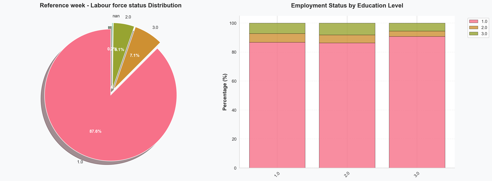
=== Correlation Analysis ===
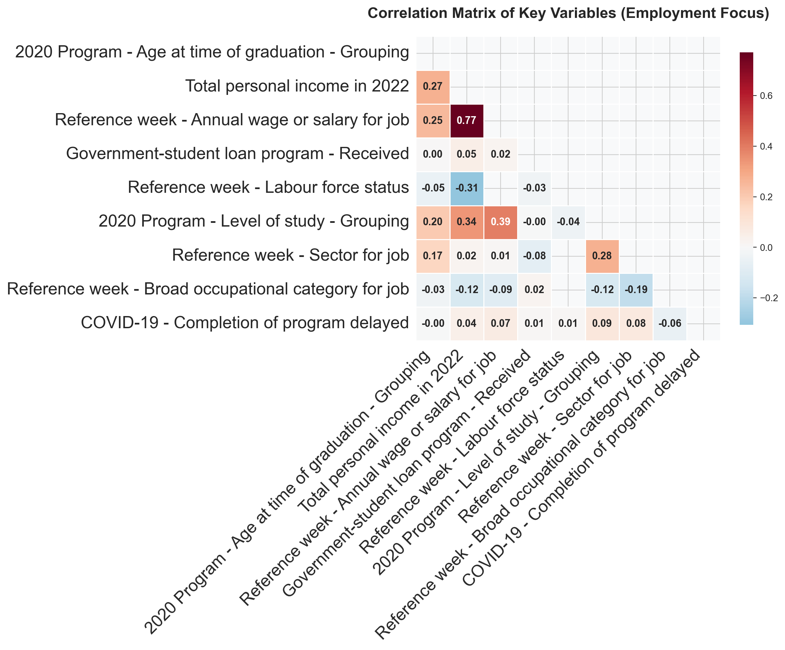
Using the following features for modeling: ['GENDER2', 'CERTLEVP', 'PERSINCP', 'GRADAGEP', 'VISBMINP', 'CTZSHIPP', 'MS_P01', 'REG_INST', 'EDU_010', 'PGMCIPAP', 'STULOANS', 'JOBINCP', 'LFCINDP', 'LFCOCCP', 'LMA6_11', 'COV_010', 'LMA_010']
=== Predictive Modeling: Employment Status Prediction ===
Removed job-related features: ['JOBINCP', 'LFCINDP', 'LFCOCCP', 'LMA6_11']
Using features: ['Gender after distribution of non-binary persons', '2020 Program - Level of study - Grouping', 'Total personal income in 2022', '2020 Program - Age at time of graduation - Grouping', 'Self-identified as a member of a visible minority group', 'Time of interview 2023 - Status in Canada', 'Marital status', '2020 Program - Region of postsecondary educational institution', 'After 2020 program - Other postsecondary programs taken', '2020 Program - Aggregated CIP 2021', 'Government-student loan program - Received', 'COVID-19 - Completion of program delayed', 'Reference week - Attended school, college, CEGEP or university']
Class distribution after processing: {1.0: np.int64(5516), 2.0: np.int64(336)}
Class weights: {np.float64(1.0): np.float64(0.5304325304325305), np.float64(2.0): np.float64(8.714893617021277)}
After SMOTE - Class distribution: [ 0 3861 3861]
1. SelectKBest Feature Selection:
Selected features: ['2020 Program - Level of study - Grouping', 'Total personal income in 2022', '2020 Program - Age at time of graduation - Grouping', 'Marital status', 'COVID-19 - Completion of program delayed']
2. Recursive Feature Elimination (RFE):
Selected features: ['Total personal income in 2022', 'Time of interview 2023 - Status in Canada', 'Marital status', 'Government-student loan program - Received', 'Reference week - Attended school, college, CEGEP or university']
3. Random Forest Feature Importance:
C:\Users\Fuxim\miniconda3\envs\quarto-env\lib\site-packages\sklearn\base.py:474: FutureWarning:
`BaseEstimator._validate_data` is deprecated in 1.6 and will be removed in 1.7. Use `sklearn.utils.validation.validate_data` instead. This function becomes public and is part of the scikit-learn developer API.
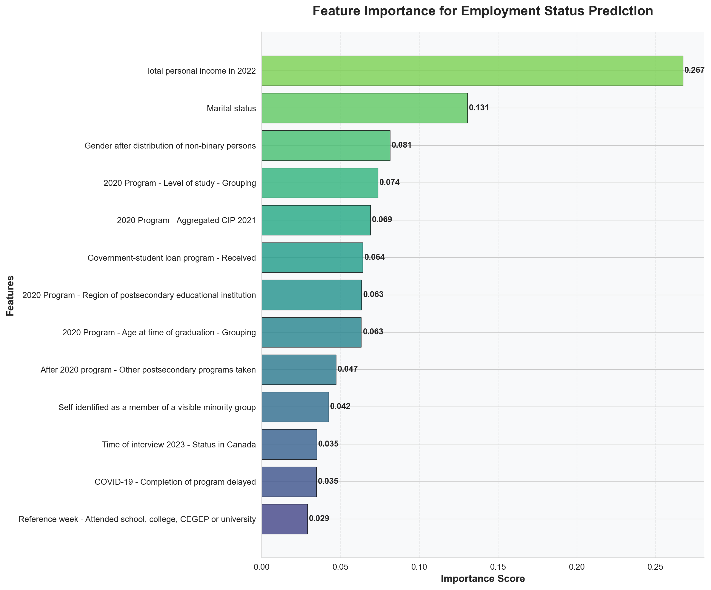
Top 5 features: ['Total personal income in 2022', 'Marital status', 'Gender after distribution of non-binary persons', '2020 Program - Level of study - Grouping', '2020 Program - Aggregated CIP 2021']
4. Model Performance Comparison:
All features accuracy: 0.9305239179954442
Top 5 features accuracy: 0.8849658314350797
SelectKBest features accuracy: 0.8883826879271071
RFE features accuracy: 0.8604783599088838
7. Cross-Validation Results:
Cross-Validation F1 Scores: [0.91844517 0.90291254 0.91644906 0.91774194 0.92421361]
Mean CV F1 Score: 0.916 (+/- 0.014)
=== Employment Outcomes by Program ===
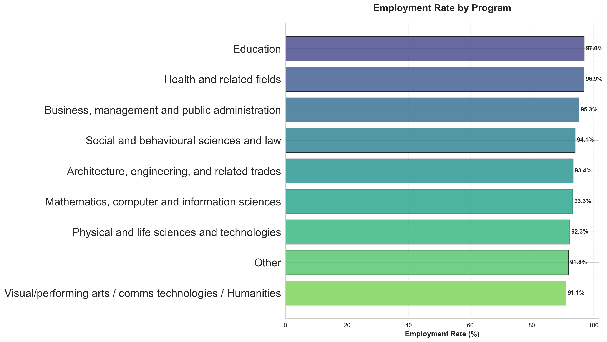
Programs by Employment Rate (with sufficient data):
Education: 97.0% (1167.0/1203.0 employed)
Health and related fields: 96.9% (2216.0/2286.0 employed)
Business, management and public administration: 95.3% (3465.0/3637.0 employed)
Social and behavioural sciences and law: 94.1% (1967.0/2091.0 employed)
Architecture, engineering, and related trades: 93.4% (1955.0/2094.0 employed)
Mathematics, computer and information sciences: 93.3% (829.0/889.0 employed)
Physical and life sciences and technologies: 92.3% (703.0/762.0 employed)
Other: 91.8% (807.0/879.0 employed)
Visual/performing arts / comms technologies / Humanities: 91.1% (977.0/1073.0 employed)
Note: Only 9 programs had sufficient data (>50 respondents)
=== Employment Income Heatmap (JOBINCP) ===
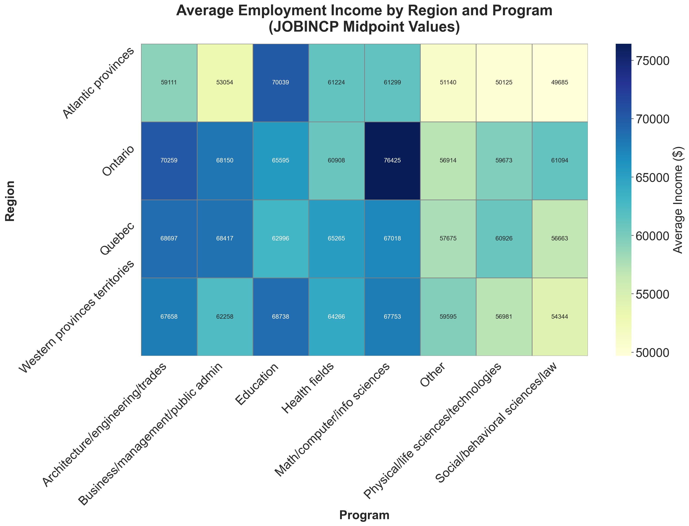
Summary Statistics:
Total employed individuals in analysis: 11703
Average income across all employed: $63039
Highest paying region-program combination: $76425
Lowest paying region-program combination: $49685
6.2 Employment Income (Linear Regression)
import yamlimport pandas as pdimport numpy as npimport matplotlib.pyplot as pltimport seaborn as snsfrom sklearn.preprocessing import LabelEncoder, StandardScalerfrom sklearn.model_selection import train_test_splitfrom sklearn.ensemble import RandomForestRegressorfrom sklearn.feature_selection import SelectKBest, f_regression, RFE, VarianceThresholdfrom sklearn.linear_model import LinearRegression, Ridgefrom sklearn.metrics import mean_squared_error, r2_score, mean_absolute_errorimport warningsimport os# Filter out the specific warningswarnings.filterwarnings("ignore", category=UserWarning, module="sklearn.feature_selection._univariate_selection")warnings.filterwarnings("ignore", category=RuntimeWarning, module="sklearn.feature_selection._univariate_selection")# Set professional style with a modern color paletteplt.style.use('default')sns.set_style("whitegrid")sns.set_palette("husl")plt.rcParams['figure.figsize'] = (12, 8)plt.rcParams['font.size'] =10plt.rcParams['axes.titlesize'] =16plt.rcParams['axes.titleweight'] ='bold'plt.rcParams['axes.labelsize'] =12plt.rcParams['xtick.labelsize'] =10plt.rcParams['ytick.labelsize'] =10plt.rcParams['legend.fontsize'] =10plt.rcParams['figure.titlesize'] =18plt.rcParams['figure.titleweight'] ='bold'# Load the YAML files with feature descriptions and response codesdef load_feature_descriptions(file_path='ngs2020_questions.yaml'):try:withopen(file_path, 'r') asfile: questions = yaml.safe_load(file)return questionsexceptFileNotFoundError:print(f"Error: File '{file_path}' not found.")return {}except yaml.YAMLError as e:print(f"Error parsing YAML file: {e}")return {}def load_response_codes(file_path='ngs2020_responses.yaml'):try:withopen(file_path, 'r') asfile: responses = yaml.safe_load(file)return responsesexceptFileNotFoundError:print(f"Error: File '{file_path}' not found.")return {}except yaml.YAMLError as e:print(f"Error parsing YAML file: {e}")return {}# Load feature descriptions and response codesfeature_descriptions = load_feature_descriptions()response_codes = load_response_codes()# Function to get human-readable feature namesdef get_feature_name(feature_code):return feature_descriptions.get(feature_code, feature_code)# Function to get human-readable response valuesdef get_response_value(feature_code, value):if feature_code in response_codes andstr(value) in response_codes[feature_code]:return response_codes[feature_code][str(value)]return value# Function to map a series to human-readable valuesdef map_series_to_readable(series, feature_code):if feature_code in response_codes: mapping = response_codes[feature_code]return series.map(lambda x: mapping.get(str(x), x))return series# Function to get readable labels for plottingdef get_readable_labels(feature_code, values):if feature_code in response_codes:return [response_codes[feature_code].get(str(val), str(val)) for val in values]return [str(val) for val in values]# Function to map income codes to midpoint valuesdef map_income_to_midpoint(income_code): income_mapping = {1: 15000, # Less than $30,000 -> midpoint $15,0002: 40000, # $30,000 to $49,999 -> midpoint $40,0003: 60000, # $50,000 to $69,999 -> midpoint $60,0004: 80000, # $70,000 to $89,999 -> midpoint $80,0005: 100000# $90,000 or more -> approximate midpoint $100,000 }return income_mapping.get(income_code, np.nan)# Load the actual datadf = pd.read_csv('ngs2020.csv')# Print available columns to help debugprint("Available columns in dataset:")print(df.columns.tolist())# Define missing value codes based on the data documentationmissing_codes = [6, 7, 8, 9, 96, 97, 98, 99]# Create a function to visualize missing datadef plot_missing_data(df): missing = df.isin(missing_codes).mean() *100 missing = missing[missing >0] missing.sort_values(inplace=True)# Use human-readable feature names missing.index = [get_feature_name(col) for col in missing.index]# Create visualization fig, ax = plt.subplots(figsize=(12, 19)) colors = plt.cm.viridis(np.linspace(0.2, 0.8, len(missing))) bars = ax.barh(missing.index, missing.values, color=colors, alpha=0.8, edgecolor='black', linewidth=0.5)# Add value annotations on barsfor bar in bars: width = bar.get_width() ax.text(width +0.5, bar.get_y() + bar.get_height()/2, f'{width:.1f}%', ha='left', va='center', fontweight='bold', fontsize=10)# Styling ax.set_xlabel('Percentage (%)', fontweight='bold', fontsize=12) ax.set_ylabel('Column Name', fontweight='bold', fontsize=12) ax.set_title('Percentage of Missing/Special Values by Column', fontsize=16, fontweight='bold', pad=20)# Add grid ax.grid(axis='x', alpha=0.3, linestyle='--')# Remove spines ax.spines[['top', 'right']].set_visible(False)# Add a subtle background ax.set_facecolor('#f8f9fa') plt.tight_layout() plt.show()plot_missing_data(df)# Data cleaning - replace missing codes with NaN# Special handling for VISBMINP and GRADAGEP to preserve category 9 as a valid responsepreserve_codes = {'VISBMINP': [9], 'GRADAGEP': [9]} # Codes to keep as-is for specific variables# for col in df.columns:# if df[col].dtype in ['int64', 'float64']:# if col in preserve_codes:# # For variables with preserved codes, only replace codes not in the preserve list# codes_to_replace = [c for c in missing_codes if c not in preserve_codes[col]]# df[col] = df[col].replace(codes_to_replace, np.nan)# else:# # For all other variables, replace all missing codes# df[col] = df[col].replace(missing_codes, np.nan)# Data cleaning - replace missing codes with NaN# Special handling for VISBMINP and GRADAGEP to preserve category 9 as a valid responsepreserve_codes = {'VISBMINP': [9], 'GRADAGEP': [9]} # Codes to keep as-is for specific variables# Don't apply missing code replacement to the program columncolumns_to_clean = [col for col in df.columns if col !='PGMCIPAP']for col in columns_to_clean:if df[col].dtype in ['int64', 'float64']:if col in preserve_codes:# For variables with preserved codes, only replace codes not in the preserve list codes_to_replace = [c for c in missing_codes if c notin preserve_codes[col]] df[col] = df[col].replace(codes_to_replace, np.nan)else:# For all other variables, replace all missing codes df[col] = df[col].replace(missing_codes, np.nan)# For the program column, only replace the actual missing codes (96, 97, 98, 99)if'PGMCIPAP'in df.columns: df['PGMCIPAP'] = df['PGMCIPAP'].replace([96, 97, 98, 99], np.nan)# Map income codes to midpoint valuesdf['PERSINCP_midpoint'] = df['PERSINCP'].apply(map_income_to_midpoint)# Income Distribution Analysisdef income_analysis(df):print("\n=== Income Distribution Analysis ===\n")if'PERSINCP_midpoint'notin df.columns:print("Personal income data not available.")return# Filter to only employed individuals for income analysis income_df = df[df['LFSTATP'] ==1].copy() if'LFSTATP'in df.columns else df.copy()# Create a figure for income analysis plots fig, axes = plt.subplots(1, 2, figsize=(16, 6))# Color palette colors = sns.color_palette("husl", 8)# Income distribution income_data = income_df['PERSINCP_midpoint'].dropna()print(f"{get_feature_name('PERSINCP')} Statistics:")print(f"Mean: ${income_data.mean():.2f}")print(f"Median: ${income_data.median():.2f}")print(f"Standard Deviation: ${income_data.std():.2f}")print(f"Min: ${income_data.min():.2f}")print(f"Max: ${income_data.max():.2f}")# Create histogram for income distribution axes[0].hist(income_data, bins=30, color=colors[0], alpha=0.8, edgecolor='black', linewidth=0.5) axes[0].set_xlabel('Income ($)', fontweight='bold', fontsize=12) axes[0].set_ylabel('Frequency', fontweight='bold', fontsize=12) axes[0].set_title(f'{get_feature_name("PERSINCP")} Distribution', fontweight='bold', fontsize=14, pad=20)# Add grid axes[0].grid(axis='y', alpha=0.3, linestyle='--')# Remove spines axes[0].spines[['top', 'right']].set_visible(False)# Income by education levelif'CERTLEVP'in income_df.columns:# Group by education level and calculate mean income income_by_edu = income_df.groupby('CERTLEVP')['PERSINCP_midpoint'].mean().dropna()# Get readable labels edu_labels = get_readable_labels('CERTLEVP', income_by_edu.index)# Create bar chart bars = axes[1].bar(edu_labels, income_by_edu.values, color=colors[:len(income_by_edu)], alpha=0.8, edgecolor='black', linewidth=0.5) axes[1].set_title('Average Income by Education Level', fontweight='bold', fontsize=14, pad=20) axes[1].set_ylabel('Average Income ($)', fontweight='bold', fontsize=12) axes[1].tick_params(axis='x', rotation=45) axes[1].set_xticklabels(["College","Bachelor's","Master's / Doctorate"])# Add value labels on top of barsfor bar in bars: height = bar.get_height() axes[1].text(bar.get_x() + bar.get_width()/2., height +500,f'${height:.0f}', ha='center', va='bottom', fontweight='bold')# Add grid axes[1].grid(axis='y', alpha=0.3, linestyle='--')# Remove spines axes[1].spines[['top', 'right']].set_visible(False)else: axes[1].set_visible(False)print("Education level data (CERTLEVP) not available for income analysis.")# Add a background color to the figure fig.patch.set_facecolor('#f8f9fa') plt.tight_layout() plt.show()income_analysis(df)# Correlation Analysis with Income Focusdef correlation_analysis(df):print("\n=== Correlation Analysis ===\n")# Select columns that might have meaningful correlations with income corr_cols = ['GRADAGEP', 'PERSINCP_midpoint', 'JOBINCP', 'STULOANS', 'CERTLEVP', ]# Add additional columns if they exist optional_cols = ['LFCINDP', 'LFCOCCP', 'COV_010', 'GENDER2', 'VISBMINP', 'CTZSHIPP']for col in optional_cols:if col in df.columns: corr_cols.append(col)# Filter to only include columns that exist in the dataset corr_cols = [col for col in corr_cols if col in df.columns]iflen(corr_cols) <2:print("Not enough columns for correlation analysis.")return corr_df = df[corr_cols].copy()# Filter out missing codesfor col in corr_cols: corr_df = corr_df[~corr_df[col].isin(missing_codes)]# Compute correlation matrix corr_matrix = corr_df.corr()# Get human-readable labels human_labels = [get_feature_name(col) for col in corr_cols]# Plot heatmap plt.figure(figsize=(12, 10))# Create a mask for the upper triangle mask = np.triu(np.ones_like(corr_matrix, dtype=bool))# Create heatmap with mask heatmap = sns.heatmap( corr_matrix, annot=True, cmap='RdBu_r', center=0, fmt=".2f", square=True, mask=mask, cbar_kws={"shrink": 0.8}, annot_kws={"size": 11, "weight": "bold"}, linewidths=0.5, linecolor='white' )# Set title plt.title('Correlation Matrix of Key Variables (Income Focus)', fontsize=16, fontweight='bold', pad=20)# Set x-axis labels with rotation heatmap.set_xticklabels(human_labels, rotation=45, ha='right', fontsize=18)# Set y-axis labels with proper rotation and alignment heatmap.set_yticklabels(human_labels, rotation=0, va='center', fontsize=18)# Add a background plt.gca().set_facecolor('#f8f9fa') plt.tight_layout() plt.show()correlation_analysis(df)# Define potential features for income prediction modelingpotential_features = ['GENDER2', 'CERTLEVP', 'GRADAGEP', 'VISBMINP', 'CTZSHIPP', 'MS_P01', 'REG_INST', 'EDU_010','PGMCIPAP', 'STULOANS', 'JOBINCP']# Add optional features if they exist in the datasetoptional_features = ['LFCINDP', 'LFCOCCP', 'LMA6_11', 'COV_010', 'LMA_010', 'LMA_020', 'LMA_030']for feature in optional_features:if feature in df.columns: potential_features.append(feature)# Filter to only include columns that exist in the datasetpotential_features = [col for col in potential_features if col in df.columns]print(f"Using the following features for modeling: {potential_features}")# Predictive Modeling with Feature Selection for Incomedef predict_income(df, features):print("\n=== Predictive Modeling: Income Prediction ===\n")if'PERSINCP_midpoint'notin df.columns:print("Income data (PERSINCP_midpoint) not available for modeling.")return# Filter to only employed individuals for income predictionif'LFSTATP'in df.columns: employed_df = df[df['LFSTATP'] ==1].copy()else: employed_df = df.copy()# Remove job-related features that might have high missing rates job_features_to_remove = ['JOBINCP', 'LFCINDP', 'LFCOCCP', 'LMA6_11'] features = [f for f in features if f notin job_features_to_remove]print(f"Removed job-related features: {job_features_to_remove}")print(f"Using features: {[get_feature_name(f) for f in features]}")# Prepare data with potential features model_df = employed_df[features + ['PERSINCP_midpoint']].copy()# Replace missing codes with NaNfor col in model_df.columns:if model_df[col].dtype in ['int64', 'float64']:if col in preserve_codes: codes_to_replace = [c for c in missing_codes if c notin preserve_codes[col]] model_df[col] = model_df[col].replace(codes_to_replace, np.nan)else: model_df[col] = model_df[col].replace(missing_codes, np.nan)# Drop rows with missing values model_df = model_df.dropna()# Check data sizeiflen(model_df) <100:print(f"Not enough data for modeling. Only {len(model_df)} samples available.")return# Convert categorical variables to numerical le = LabelEncoder()for col in features:if model_df[col].dtype =='object': model_df[col] = le.fit_transform(model_df[col])# Split data X = model_df.drop('PERSINCP_midpoint', axis=1) y = model_df['PERSINCP_midpoint'] X_train, X_test, y_train, y_test = train_test_split( X, y, test_size=0.3, random_state=42 )# Remove constant features selector = VarianceThreshold() X_train_clean = selector.fit_transform(X_train) X_test_clean = selector.transform(X_test)# Get the feature names after removing constant features selected_features = X.columns[selector.get_support()] X_train = pd.DataFrame(X_train_clean, columns=selected_features) X_test = pd.DataFrame(X_test_clean, columns=selected_features)iflen(selected_features) ==0:print("No features remaining after variance threshold. Cannot proceed with modeling.")return# Feature Selection Methods# Method 1: SelectKBest with F-regressionprint("1. SelectKBest Feature Selection:") k =min(5, len(selected_features)) selector_kbest = SelectKBest(score_func=f_regression, k=k) X_kbest = selector_kbest.fit_transform(X_train, y_train) selected_features_kbest = selected_features[selector_kbest.get_support()] selected_features_kbest_desc = [get_feature_name(feat) for feat in selected_features_kbest]print(f"Selected features: {selected_features_kbest_desc}")# Method 2: Recursive Feature Elimination (RFE)print("\n2. Recursive Feature Elimination (RFE):") estimator = LinearRegression() n_features =min(5, len(selected_features)) selector_rfe = RFE(estimator, n_features_to_select=n_features, step=1) X_rfe = selector_rfe.fit_transform(X_train, y_train) selected_features_rfe = selected_features[selector_rfe.get_support()] selected_features_rfe_desc = [get_feature_name(feat) for feat in selected_features_rfe]print(f"Selected features: {selected_features_rfe_desc}")# Method 3: Feature Importance from Random Forestprint("\n3. Random Forest Feature Importance:") rf = RandomForestRegressor(random_state=42) rf.fit(X_train, y_train)# Plot feature importance importance = pd.Series(rf.feature_importances_, index=selected_features) importance.index = [get_feature_name(feat) for feat in importance.index] importance = importance.sort_values(ascending=True)# Create a horizontal bar chart for feature importance plt.figure(figsize=(12, 10)) colors = plt.cm.viridis(np.linspace(0.2, 0.8, len(importance))) bars = plt.barh(importance.index, importance.values, color=colors, alpha=0.8, edgecolor='black', linewidth=0.5) # Added missing closing parenthesis plt.tick_params(axis='y', labelsize=18)# Add value annotations on barsfor bar in bars: width = bar.get_width() plt.text(width +0.001, bar.get_y() + bar.get_height()/2, f'{width:.3f}', ha='left', va='center', fontweight='bold', fontsize=10)# Styling plt.xlabel('Importance Score', fontweight='bold', fontsize=12) plt.ylabel('Features', fontweight='bold', fontsize=12) plt.title('Feature Importance for Income Prediction', fontsize=16, fontweight='bold', pad=20)# Add grid plt.grid(axis='x', alpha=0.3, linestyle='--')# Remove spines plt.gca().spines[['top', 'right']].set_visible(False)# Add a background plt.gca().set_facecolor('#f8f9fa') plt.tight_layout() plt.show()# Select top 5 features based on importance top_features = importance.nlargest(min(5, len(importance))).index.tolist()print(f"Top 5 features: {top_features}")# Compare performance with and without feature selectionprint("\n4. Model Performance Comparison:")# Baseline model (all features) model_all = RandomForestRegressor(random_state=42) model_all.fit(X_train, y_train) y_pred_all = model_all.predict(X_test) rmse_all = np.sqrt(mean_squared_error(y_test, y_pred_all)) r2_all = r2_score(y_test, y_pred_all)print(f"All features RMSE: ${rmse_all:.2f}, R²: {r2_all:.3f}")# Model with top 5 features from RF importance top_feature_codes = [feat for feat in selected_features if get_feature_name(feat) in top_features] X_train_top = X_train[top_feature_codes] X_test_top = X_test[top_feature_codes] model_top = RandomForestRegressor(random_state=42) model_top.fit(X_train_top, y_train) y_pred_top = model_top.predict(X_test_top) rmse_top = np.sqrt(mean_squared_error(y_test, y_pred_top)) r2_top = r2_score(y_test, y_pred_top)print(f"Top 5 features RMSE: ${rmse_top:.2f}, R²: {r2_top:.3f}")# Model with SelectKBest features X_train_kbest = X_train[selected_features_kbest] X_test_kbest = X_test[selected_features_kbest] model_kbest = RandomForestRegressor(random_state=42) model_kbest.fit(X_train_kbest, y_train) y_pred_kbest = model_kbest.predict(X_test_kbest) rmse_kbest = np.sqrt(mean_squared_error(y_test, y_pred_kbest)) r2_kbest = r2_score(y_test, y_pred_kbest)print(f"SelectKBest features RMSE: ${rmse_kbest:.2f}, R²: {r2_kbest:.3f}")# Model with RFE features X_train_rfe = X_train[selected_features_rfe] X_test_rfe = X_test[selected_features_rfe] model_rfe = RandomForestRegressor(random_state=42) model_rfe.fit(X_train_rfe, y_train) y_pred_rfe = model_rfe.predict(X_test_rfe) rmse_rfe = np.sqrt(mean_squared_error(y_test, y_pred_rfe)) r2_rfe = r2_score(y_test, y_pred_rfe)print(f"RFE features RMSE: ${rmse_rfe:.2f}, R²: {r2_rfe:.3f}")# Create a comparison chart for R² scores methods = ['All Features', 'Top 5 Features', 'SelectKBest', 'RFE'] r2_scores = [r2_all, r2_top, r2_kbest, r2_rfe]# Create a comparison bar chart plt.figure(figsize=(10, 6)) colors = ['#1f77b4', '#ff7f0e', '#2ca02c', '#d62728'] bars = plt.bar(methods, r2_scores, color=colors, alpha=0.8, edgecolor='black', linewidth=0.5)# Add value labels on top of barsfor bar in bars: height = bar.get_height() plt.text(bar.get_x() + bar.get_width()/2., height +0.01,f'{height:.3f}', ha='center', va='bottom', fontweight='bold', fontsize=11)# Styling plt.ylabel('R² Score', fontweight='bold', fontsize=12) plt.title('Model Performance (R²) by Feature Selection Method', fontsize=16, fontweight='bold', pad=20) plt.ylim(0, 1)# Add grid plt.grid(axis='y', alpha=0.3, linestyle='--')# Remove spines plt.gca().spines[['top', 'right']].set_visible(False)# Add a background plt.gca().set_facecolor('#f8f9fa') plt.tight_layout() plt.show()# Create actual vs predicted plot for the best model best_model = model_top # Using top features model y_pred_best = best_model.predict(X_test_top) plt.figure(figsize=(10, 6)) plt.scatter(y_test, y_pred_best, alpha=0.5) plt.plot([y_test.min(), y_test.max()], [y_test.min(), y_test.max()], 'r--', lw=2) plt.xlabel('Actual Income ($)', fontweight='bold') plt.ylabel('Predicted Income ($)', fontweight='bold') plt.title('Actual vs Predicted Income', fontsize=16, fontweight='bold', pad=20)# Add grid plt.grid(alpha=0.3, linestyle='--')# Remove spines plt.gca().spines[['top', 'right']].set_visible(False) plt.tight_layout() plt.show()# Run predictive modeling with the fixed functionpredict_income(df, potential_features)# Additional analysis: Income by program# Additional analysis: Income by programdef income_by_program(df):print("\n=== Income Outcomes by Program ===\n")if'PGMCIPAP'notin df.columns or'PERSINCP_midpoint'notin df.columns:print("Program or income data not available.")return# Filter to only employed individuals income_df = df[df['LFSTATP'] ==1].copy() if'LFSTATP'in df.columns else df.copy()# Create a mapping dictionary for program codes to names program_mapping = {1: "Education",2: "Visual/performing arts/comms/humanities",4: "Social/behavioral sciences/law",5: "Business/management/public admin",6: "Physical/life sciences/technologies",7: "Math/computer/info sciences",8: "Architecture/engineering/trades",9: "Health fields",10: "Other",99: "Not stated" }# Group by program and calculate mean income program_income = income_df.groupby('PGMCIPAP')['PERSINCP_midpoint'].agg(['mean', 'count']).dropna()# Filter out "Not stated" (code 99) program_income = program_income[program_income.index !=99]# Separate programs with sufficient data (>50) and insufficient data (<=50) sufficient_programs = program_income[program_income['count'] >50] insufficient_programs = program_income[program_income['count'] <=50]# Visualize only programs with sufficient dataiflen(sufficient_programs) >0:# Sort by mean income sufficient_programs = sufficient_programs.sort_values('mean', ascending=False)# Create visualization fig, ax = plt.subplots(figsize=(12, 8)) # Increased size to accommodate more categories# Get program names using our mapping program_labels = [program_mapping.get(pid, f"Program {pid}") for pid in sufficient_programs.index]# Create bar chart with vertical bars colors = plt.cm.viridis(np.linspace(0.2, 0.8, len(sufficient_programs))) bars = ax.bar(range(len(sufficient_programs)), sufficient_programs['mean'], color=colors, alpha=0.8, edgecolor='black', linewidth=0.5) ax.set_xticks(range(len(sufficient_programs))) ax.set_xticklabels(program_labels, fontsize=18, rotation=45, ha='right') ax.set_ylabel('Average Income ($)', fontweight='bold') ax.set_title('Average Income by Program (n > 50)', fontsize=16, fontweight='bold', pad=20)# Add value labelsfor i, bar inenumerate(bars): height = bar.get_height() ax.text(bar.get_x() + bar.get_width()/2, height +500,f'${height:.0f}', ha='center', va='bottom', fontweight='bold')# Add grid ax.grid(axis='y', alpha=0.3, linestyle='--')# Remove spines ax.spines[['top', 'right']].set_visible(False) plt.tight_layout() plt.show()# Print the results with more informationprint("Programs by Average Income (with sufficient data, n > 50):")for pid, row in sufficient_programs.iterrows(): program_name = program_mapping.get(pid, f"Program {pid}") avg_income = row['mean'] count = row['count']print(f"{program_name}: ${avg_income:.0f} (n={count})")# Provide additional contextprint(f"\nNote: {len(sufficient_programs)} programs had sufficient data (>50 respondents)")else:print("No programs had sufficient data (>50 respondents) for visualization.")# Print information for programs with insufficient dataiflen(insufficient_programs) >0:print(f"\nPrograms with Limited Data (n <= 50):")# Sort by count (descending) to show programs with the most data first insufficient_programs = insufficient_programs.sort_values('count', ascending=False)for pid, row in insufficient_programs.iterrows(): program_name = program_mapping.get(pid, f"Program {pid}") avg_income = row['mean'] count = row['count']print(f"{program_name}: ${avg_income:.0f} (n={count})")print(f"\nNote: {len(insufficient_programs)} programs had limited data (<=50 respondents)")else:print("\nNo programs had limited data (<=50 respondents).")# Run the program analysisincome_by_program(df)
C:\Users\Fuxim\AppData\Local\Temp\ipykernel_23340\10805593.py:186: PerformanceWarning:
DataFrame is highly fragmented. This is usually the result of calling `frame.insert` many times, which has poor performance. Consider joining all columns at once using pd.concat(axis=1) instead. To get a de-fragmented frame, use `newframe = frame.copy()`
C:\Users\Fuxim\AppData\Local\Temp\ipykernel_23340\10805593.py:242: UserWarning:
set_ticklabels() should only be used with a fixed number of ticks, i.e. after set_ticks() or using a FixedLocator.
=== Income Distribution Analysis ===
Total personal income in 2022 Statistics:
Mean: $59568.25
Median: $60000.00
Standard Deviation: $27797.41
Min: $15000.00
Max: $100000.00
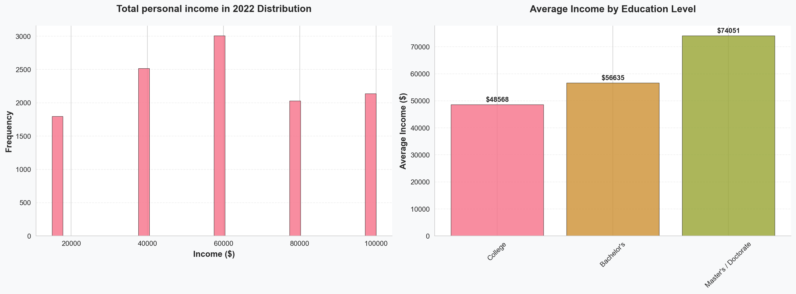
=== Correlation Analysis ===
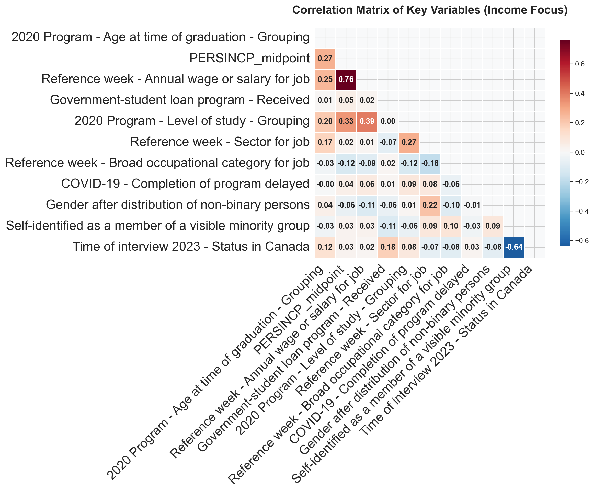
Using the following features for modeling: ['GENDER2', 'CERTLEVP', 'GRADAGEP', 'VISBMINP', 'CTZSHIPP', 'MS_P01', 'REG_INST', 'EDU_010', 'PGMCIPAP', 'STULOANS', 'JOBINCP', 'LFCINDP', 'LFCOCCP', 'LMA6_11', 'COV_010', 'LMA_010']
=== Predictive Modeling: Income Prediction ===
Removed job-related features: ['JOBINCP', 'LFCINDP', 'LFCOCCP', 'LMA6_11']
Using features: ['Gender after distribution of non-binary persons', '2020 Program - Level of study - Grouping', '2020 Program - Age at time of graduation - Grouping', 'Self-identified as a member of a visible minority group', 'Time of interview 2023 - Status in Canada', 'Marital status', '2020 Program - Region of postsecondary educational institution', 'After 2020 program - Other postsecondary programs taken', '2020 Program - Aggregated CIP 2021', 'Government-student loan program - Received', 'COVID-19 - Completion of program delayed', 'Reference week - Attended school, college, CEGEP or university']
1. SelectKBest Feature Selection:
Selected features: ['2020 Program - Level of study - Grouping', '2020 Program - Age at time of graduation - Grouping', 'Marital status', 'After 2020 program - Other postsecondary programs taken', 'Reference week - Attended school, college, CEGEP or university']
2. Recursive Feature Elimination (RFE):
Selected features: ['Gender after distribution of non-binary persons', '2020 Program - Level of study - Grouping', 'Marital status', 'After 2020 program - Other postsecondary programs taken', 'Reference week - Attended school, college, CEGEP or university']
3. Random Forest Feature Importance:
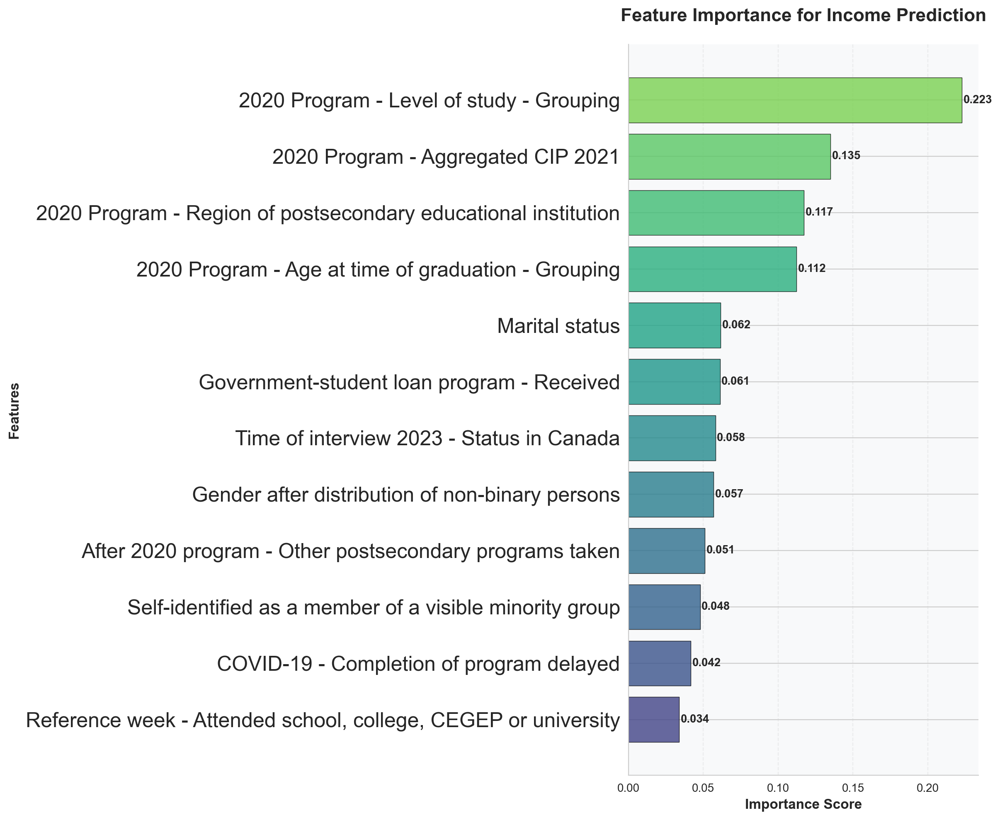
Top 5 features: ['2020 Program - Level of study - Grouping', '2020 Program - Aggregated CIP 2021', '2020 Program - Region of postsecondary educational institution', '2020 Program - Age at time of graduation - Grouping', 'Marital status']
4. Model Performance Comparison:
All features RMSE: $23668.64, R²: 0.252
Top 5 features RMSE: $22978.14, R²: 0.295
SelectKBest features RMSE: $23148.84, R²: 0.284
RFE features RMSE: $23134.13, R²: 0.285
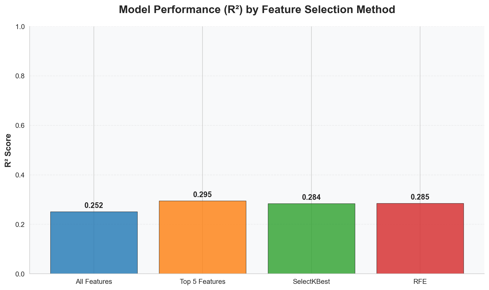
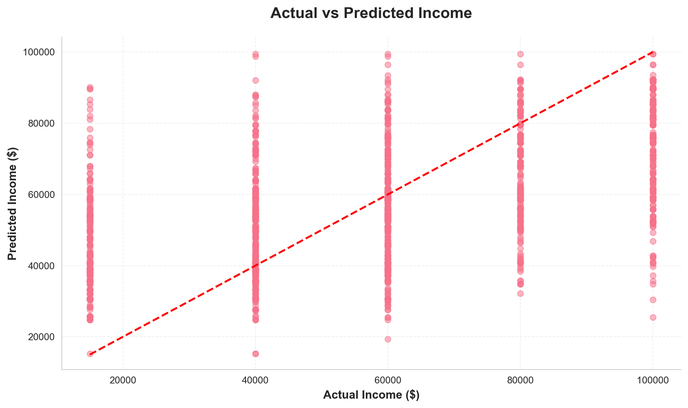
=== Income Outcomes by Program ===
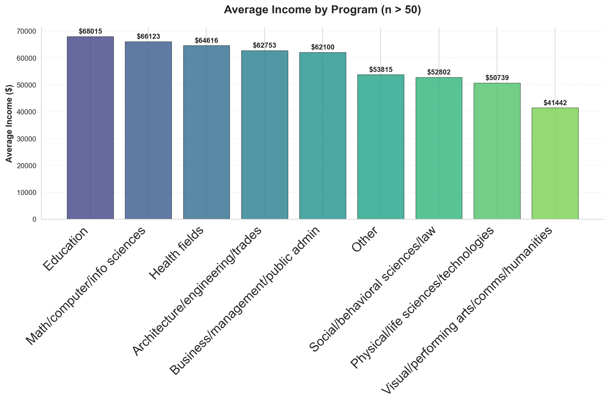
Programs by Average Income (with sufficient data, n > 50):
Education: $68015 (n=957.0)
Math/computer/info sciences: $66123 (n=659.0)
Health fields: $64616 (n=1783.0)
Architecture/engineering/trades: $62753 (n=1618.0)
Business/management/public admin: $62100 (n=2819.0)
Other: $53815 (n=658.0)
Social/behavioral sciences/law: $52802 (n=1608.0)
Physical/life sciences/technologies: $50739 (n=575.0)
Visual/performing arts/comms/humanities: $41442 (n=780.0)
Note: 9 programs had sufficient data (>50 respondents)
No programs had limited data (<=50 respondents).
6.3 Program Tiers Based on Employment and Income (Clustering)
import pandas as pdimport numpy as npfrom sklearn.cluster import KMeansfrom sklearn.preprocessing import StandardScalerimport matplotlib.pyplot as pltimport seaborn as snsfrom matplotlib.ticker import FuncFormatter# Set professional style for publication-quality figuresplt.style.use('default')sns.set_style("whitegrid")plt.rcParams['font.family'] ='DejaVu Sans'# Use a professional fontplt.rcParams['font.size'] =10plt.rcParams['axes.titlesize'] =14plt.rcParams['axes.titleweight'] ='bold'plt.rcParams['axes.labelsize'] =12plt.rcParams['xtick.labelsize'] =10plt.rcParams['ytick.labelsize'] =10plt.rcParams['legend.fontsize'] =10plt.rcParams['figure.titlesize'] =16plt.rcParams['figure.titleweight'] ='bold'plt.rcParams['figure.dpi'] =300# High resolutionplt.rcParams['savefig.dpi'] =300plt.rcParams['savefig.bbox'] ='tight'plt.rcParams['savefig.pad_inches'] =0.1def cluster_program_tiers_enhanced(df):""" Enhanced clustering of programs into three tiers based on employment rate and mean income. Uses a more sophisticated approach to handle limited income variation. """print("=== Enhanced Program Tier Clustering Based on Employment Outcomes ===\n")# Check required columns required_cols = ['PGMCIPAP', 'LFSTATP', 'PERSINCP_midpoint']ifnotall(col in df.columns for col in required_cols):print("Required columns not available for clustering.")returnNone# Filter to only employed and unemployed individuals employment_df = df[df['LFSTATP'].isin([1, 2])].copy()# Program mapping program_mapping = {1: "Education",2: "Arts/Humanities",4: "Social Sciences/Law",5: "Business/Management",6: "Life Sciences/Tech",7: "Math/Computer Science",8: "Engineering/Trades",9: "Health Fields",10: "Other",99: "Not stated" }# Calculate employment rate by program employment_counts = employment_df.groupby('PGMCIPAP')['LFSTATP'].value_counts().unstack(fill_value=0) employment_counts['Employment_Rate'] = employment_counts[1] / (employment_counts[1] + employment_counts[2]) *100# Calculate mean income by program (for employed individuals only) income_data = df[df['LFSTATP'] ==1].groupby('PGMCIPAP')['PERSINCP_midpoint'].mean()# Combine the data program_stats = pd.DataFrame({'Employment_Rate': employment_counts['Employment_Rate'],'Mean_Income': income_data,'Sample_Size': (employment_counts[1] + employment_counts[2]) }).dropna()# Filter out programs with insufficient data program_stats = program_stats[(program_stats['Sample_Size'] >=50) & (program_stats['Mean_Income'].notna())]iflen(program_stats) ==0:print("Insufficient data for clustering.")returnNone# Normalize the metrics to 0-1 scale program_stats['Employment_Rate_Norm'] = (program_stats['Employment_Rate'] - program_stats['Employment_Rate'].min()) /\ (program_stats['Employment_Rate'].max() - program_stats['Employment_Rate'].min()) program_stats['Income_Norm'] = (program_stats['Mean_Income'] - program_stats['Mean_Income'].min()) /\ (program_stats['Mean_Income'].max() - program_stats['Mean_Income'].min())# Create a weighted composite score (60% employment rate, 40% income) employment_weight =0.6 income_weight =0.4 program_stats['Composite_Score'] = (employment_weight * program_stats['Employment_Rate_Norm'] + income_weight * program_stats['Income_Norm'])# Prepare data for clustering X = program_stats[['Composite_Score']].values# Apply K-means clustering with 3 clusters kmeans = KMeans(n_clusters=3, random_state=42, n_init=10) program_stats['Cluster'] = kmeans.fit_predict(X)# Order clusters by composite score (higher score is better) cluster_means = program_stats.groupby('Cluster')['Composite_Score'].mean() cluster_mapping = {cluster: i+1for i, cluster inenumerate(cluster_means.sort_values(ascending=False).index)} program_stats['Tier'] = program_stats['Cluster'].map(cluster_mapping)# Add program names program_stats['Program_Name'] = program_stats.index.map(lambda x: program_mapping.get(x, f"Program {x}") )# Display resultsprint("Program Tier Classification:")print("="*60)for tier in [1, 2, 3]: tier_programs = program_stats[program_stats['Tier'] == tier].sort_values('Composite_Score', ascending=False)print(f"\nTier {tier} Programs (n={len(tier_programs)}):")print("-"*40)for idx, row in tier_programs.iterrows():print(f"{row['Program_Name']}: "f"Employment Rate: {row['Employment_Rate']:.1f}%, "f"Mean Income: ${row['Mean_Income']:,.0f}, "f"Composite Score: {row['Composite_Score']:.3f}")# Create separate figures for each plot# Figure 1: Scatter plot plt.figure(figsize=(7, 6))# Color mapping for tiers - professional color palette colors = {1: '#2E8B57', 2: '#FFA500', 3: '#DC143C'} # SeaGreen, Orange, Crimson# Scatter plot (Employment Rate vs Mean Income)for tier in [1, 2, 3]: tier_data = program_stats[program_stats['Tier'] == tier] plt.scatter(tier_data['Employment_Rate'], tier_data['Mean_Income'], c=colors[tier], label=f'Tier {tier}', s=120, alpha=0.8, edgecolors='black', linewidth=0.5)# Add program labels with improved positioningfor idx, row in tier_data.iterrows(): plt.annotate(row['Program_Name'], (row['Employment_Rate'], row['Mean_Income']), xytext=(8, 8), textcoords='offset points', fontsize=9, alpha=0.9, bbox=dict(boxstyle="round,pad=0.3", fc="white", ec="gray", alpha=0.7)) plt.xlabel('Employment Rate (%)', fontweight='bold', fontsize=12) plt.ylabel('Mean Income ($)', fontweight='bold', fontsize=12) plt.title('Program Tier Clustering Based on Employment Outcomes', fontweight='bold', pad=20, fontsize=12) plt.legend() plt.grid(True, alpha=0.3, linestyle='--') plt.xlim([90,100])# Format y-axis with dollar signsdef currency_formatter(x, pos):returnf'${x:,.0f}' plt.gca().yaxis.set_major_formatter(FuncFormatter(currency_formatter))# Remove top and right spines plt.gca().spines[['top', 'right']].set_visible(False)# Add a subtle background plt.gca().set_facecolor('#f8f9fa') plt.tight_layout() plt.show()# Figure 2: Boxplot plt.figure(figsize=(4, 3))# Prepare data for boxplot box_data = [] tier_labels = [] tier_colors = ['#2E8B57', '#FFA500', '#DC143C'] # SeaGreen, Orange, Crimsonfor i, tier inenumerate([1, 2, 3]): tier_data = program_stats[program_stats['Tier'] == tier]['Mean_Income'] box_data.append(tier_data) tier_labels.append(f"Tier {tier}\n(n={len(tier_data)})")# Create boxplot with enhanced styling box_plot = plt.boxplot(box_data, patch_artist=True, widths=0.6)# Customize box colorsfor i, patch inenumerate(box_plot['boxes']): patch.set_facecolor(tier_colors[i]) patch.set_alpha(0.8) patch.set_linewidth(1.5)# Customize other elementsfor element in ['whiskers', 'caps']: plt.setp(box_plot[element], color='black', linewidth=1.5)for median in box_plot['medians']: median.set_color('black') median.set_linewidth(2)# Customize fliers (outliers)for flier in box_plot['fliers']: flier.set(marker='o', color='black', alpha=0.5, markersize=4)# Set x-tick labels plt.xticks([1, 2, 3], tier_labels, fontsize=9)# Customize labels and title plt.title('Income Distribution by Program Tier', fontweight='bold', fontsize=9, pad=20) plt.xlabel('Program Tier', fontweight='bold', fontsize=9) plt.ylabel('Annual Income ($)', fontweight='bold', fontsize=9)# Format y-axis with dollar signs plt.gca().yaxis.set_major_formatter(FuncFormatter(currency_formatter))# Remove top and right spines plt.gca().spines[['top', 'right']].set_visible(False)# Add grid plt.grid(axis='y', alpha=0.3, linestyle='--')# Add mean markersfor i, tier inenumerate([1, 2, 3]): mean_income = program_stats[program_stats['Tier'] == tier]['Mean_Income'].mean() plt.plot(i+1, mean_income, 'D', color='yellow', markersize=3, markeredgecolor='black', markeredgewidth=1, label='Mean'if i ==0else"")# Add legend for mean marker plt.legend(loc='upper right', frameon=True, fancybox=True, shadow=True, fontsize=8)# Add a subtle background plt.gca().set_facecolor('#f8f9fa') plt.tight_layout() plt.show()# Print interpretationprint("\nInterpretation:")print("="*60)print("Programs are classified into three tiers based on a composite score that considers:")print(f"- Employment Rate (weight: {employment_weight*100}%)")print(f"- Mean Income (weight: {income_weight*100}%)")print("\nTier 1: Programs with the best employment outcomes (highest composite scores)")print("Tier 2: Programs with moderate employment outcomes")print("Tier 3: Programs with the weakest employment outcomes")return program_stats# Run the enhanced clustering analysisprogram_tiers_enhanced = cluster_program_tiers_enhanced(df)def detailed_program_analysis(df, program_tiers):""" Provide detailed analysis of program tiers with recommendations. """print("\n=== Detailed Program Tier Analysis ===\n")# Create a comprehensive visualization plt.figure(figsize=(10, 6))# Color mapping - using the same professional palette colors = {1: '#2E8B57', 2: '#FFA500', 3: '#DC143C'} # SeaGreen, Orange, Crimson# Plot: Composite Score by Program program_tiers_sorted = program_tiers.sort_values('Composite_Score', ascending=False) bars = plt.barh(program_tiers_sorted['Program_Name'], program_tiers_sorted['Composite_Score'], color=[colors[tier] for tier in program_tiers_sorted['Tier']], alpha=0.8, edgecolor='black', linewidth=0.8) plt.xlabel('Composite Score', fontweight='bold', fontsize=12) plt.title('Program Composite Scores (Employment + Income)', fontweight='bold', pad=20, fontsize=14) plt.grid(True, alpha=0.3, axis='x', linestyle='--')# Add value labels on the barsfor bar in bars: width = bar.get_width() plt.text(width +0.01, bar.get_y() + bar.get_height()/2, f'{width:.2f}', ha='left', va='center', fontweight='bold', fontsize=9)# Remove top and right spines plt.gca().spines[['top', 'right']].set_visible(False)# Add a subtle background plt.gca().set_facecolor('#f8f9fa')# Adjust layout to prevent clipping plt.tight_layout() plt.show()# Print detailed recommendationsprint("\n=== Program Tier Recommendations ===\n")# Tier 1 programs tier1 = program_tiers[program_tiers['Tier'] ==1]print("Tier 1 Programs (Excellent Outcomes):")print("-"*40)for idx, row in tier1.iterrows():print(f"✓ {row['Program_Name']}:")print(f" - Employment Rate: {row['Employment_Rate']:.1f}%")print(f" - Mean Income: ${row['Mean_Income']:,.0f}")print(f" - Composite Score: {row['Composite_Score']:.3f}")print()# Tier 2 programs tier2 = program_tiers[program_tiers['Tier'] ==2]print("Tier 2 Programs (Good Outcomes):")print("-"*40)for idx, row in tier2.iterrows():print(f"✓ {row['Program_Name']}:")print(f" - Employment Rate: {row['Employment_Rate']:.1f}%")print(f" - Mean Income: ${row['Mean_Income']:,.0f}")print(f" - Composite Score: {row['Composite_Score']:.3f}")# Specific recommendations for Tier 2 programsif row.name ==4: # Social/behavioral sciences/lawprint(" → Recommendation: Focus on increasing income potential through specialized certifications")elif row.name ==7: # Math/computer/info sciencesprint(" → Recommendation: Improve employment rates through industry partnerships")print()# Tier 3 programs tier3 = program_tiers[program_tiers['Tier'] ==3]print("Tier 3 Programs (Needs Improvement):")print("-"*40)for idx, row in tier3.iterrows():print(f"✓ {row['Program_Name']}:")print(f" - Employment Rate: {row['Employment_Rate']:.1f}%")print(f" - Mean Income: ${row['Mean_Income']:,.0f}")print(f" - Composite Score: {row['Composite_Score']:.3f}")# Specific recommendations for Tier 3 programsif row.name ==2: # Visual/performing arts/comms/humanitiesprint(" → Recommendation: Develop stronger career pathways and industry connections")elif row.name ==6: # Physical/life sciences/technologiesprint(" → Recommendation: Enhance practical skills training and industry alignment")elif row.name ==10: # Otherprint(" → Recommendation: Review and potentially restructure this program category")print()# Overall recommendationsprint("\n=== Strategic Recommendations ===\n")print("1. Tier 1 Programs: Maintain excellence, consider expanding capacity")print("2. Tier 2 Programs: Targeted interventions to move programs to Tier 1")print("3. Tier 3 Programs: Comprehensive review and potential restructuring")print("4. Continuous Monitoring: Establish regular assessment of program outcomes")print("5. Student Guidance: Use tier information for career counseling and program selection")# Run the detailed analysisdetailed_program_analysis(df, program_tiers_enhanced)
=== Enhanced Program Tier Clustering Based on Employment Outcomes ===
C:\Users\Fuxim\miniconda3\envs\quarto-env\lib\site-packages\sklearn\cluster\_kmeans.py:1419: UserWarning:
KMeans is known to have a memory leak on Windows with MKL, when there are less chunks than available threads. You can avoid it by setting the environment variable OMP_NUM_THREADS=1.
Program Tier Classification:
============================================================
Tier 1 Programs (n=2):
----------------------------------------
Education: Employment Rate: 97.0%, Mean Income: $68,015, Composite Score: 1.000
Health Fields: Employment Rate: 96.9%, Mean Income: $64,616, Composite Score: 0.942
Tier 2 Programs (n=4):
----------------------------------------
Business/Management: Employment Rate: 95.3%, Mean Income: $62,100, Composite Score: 0.736
Math/Computer Science: Employment Rate: 93.3%, Mean Income: $66,123, Composite Score: 0.593
Engineering/Trades: Employment Rate: 93.4%, Mean Income: $62,753, Composite Score: 0.553
Social Sciences/Law: Employment Rate: 94.1%, Mean Income: $52,802, Composite Score: 0.475
Tier 3 Programs (n=3):
----------------------------------------
Other: Employment Rate: 91.8%, Mean Income: $53,815, Composite Score: 0.262
Life Sciences/Tech: Employment Rate: 92.3%, Mean Income: $50,739, Composite Score: 0.261
Arts/Humanities: Employment Rate: 91.1%, Mean Income: $41,442, Composite Score: 0.000
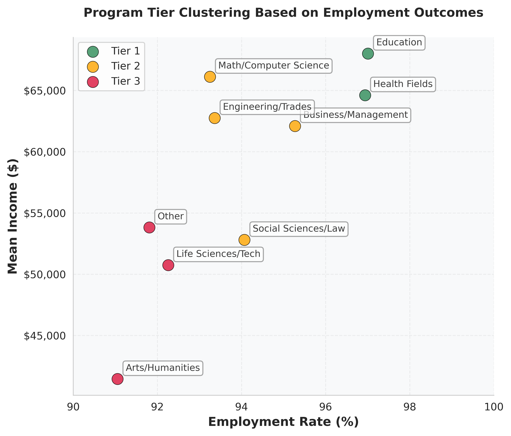
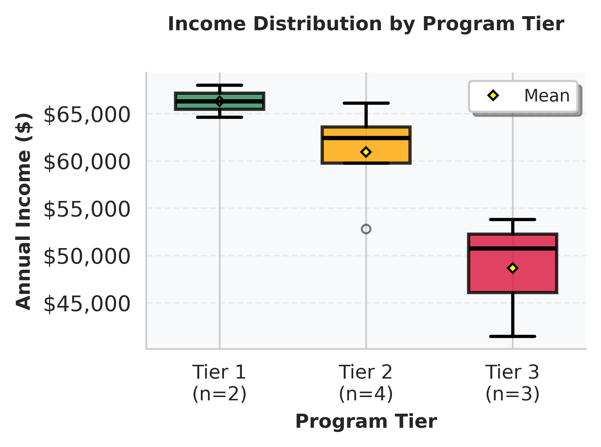
Interpretation:
============================================================
Programs are classified into three tiers based on a composite score that considers:
- Employment Rate (weight: 60.0%)
- Mean Income (weight: 40.0%)
Tier 1: Programs with the best employment outcomes (highest composite scores)
Tier 2: Programs with moderate employment outcomes
Tier 3: Programs with the weakest employment outcomes
=== Detailed Program Tier Analysis ===
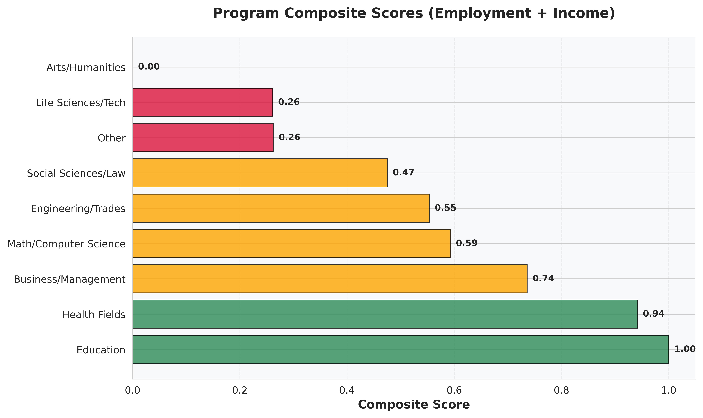
=== Program Tier Recommendations ===
Tier 1 Programs (Excellent Outcomes):
----------------------------------------
✓ Education:
- Employment Rate: 97.0%
- Mean Income: $68,015
- Composite Score: 1.000
✓ Health Fields:
- Employment Rate: 96.9%
- Mean Income: $64,616
- Composite Score: 0.942
Tier 2 Programs (Good Outcomes):
----------------------------------------
✓ Social Sciences/Law:
- Employment Rate: 94.1%
- Mean Income: $52,802
- Composite Score: 0.475
→ Recommendation: Focus on increasing income potential through specialized certifications
✓ Business/Management:
- Employment Rate: 95.3%
- Mean Income: $62,100
- Composite Score: 0.736
✓ Math/Computer Science:
- Employment Rate: 93.3%
- Mean Income: $66,123
- Composite Score: 0.593
→ Recommendation: Improve employment rates through industry partnerships
✓ Engineering/Trades:
- Employment Rate: 93.4%
- Mean Income: $62,753
- Composite Score: 0.553
Tier 3 Programs (Needs Improvement):
----------------------------------------
✓ Arts/Humanities:
- Employment Rate: 91.1%
- Mean Income: $41,442
- Composite Score: 0.000
→ Recommendation: Develop stronger career pathways and industry connections
✓ Life Sciences/Tech:
- Employment Rate: 92.3%
- Mean Income: $50,739
- Composite Score: 0.261
→ Recommendation: Enhance practical skills training and industry alignment
✓ Other:
- Employment Rate: 91.8%
- Mean Income: $53,815
- Composite Score: 0.262
→ Recommendation: Review and potentially restructure this program category
=== Strategic Recommendations ===
1. Tier 1 Programs: Maintain excellence, consider expanding capacity
2. Tier 2 Programs: Targeted interventions to move programs to Tier 1
3. Tier 3 Programs: Comprehensive review and potential restructuring
4. Continuous Monitoring: Establish regular assessment of program outcomes
5. Student Guidance: Use tier information for career counseling and program selection
7 Conclusion
This project successfully transitions the NGS dataset from a static repository of information into a dynamic tool for strategic decision-making. The creation of an interactive dashboard ensures these insights remain accessible for ongoing exploration.
The central, unequivocal finding is that field of study is the primary engine of post-graduation success. This truth allows us to move from anecdotal evidence to a data-driven understanding of our program offerings, clearly identifying areas of strength and opportunity.
The path forward is clear. We must act on these insights by:
Innovating and enhancing programs with greater market challenges through curriculum integration and robust career support.
Empowering students with this data to make informed decisions about their educational investment.
By embedding these insights into our academic strategy, student support, and marketing communications, we commit to a future of continuous improvement. This data-driven approach will not only elevate graduate outcomes but also solidify our reputation as an institution dedicated to delivering tangible, lifelong value.